Henriette-Marie . Le trône et la croix
Avant-propos
Rétrospective d’un désastre
L’Oraison funèbre de Henriette-Marie de France a été prononcée le 16 novembre 1669 dans la chapelle du monastère de la Visitation Sainte-Marie de Chaillot. La cérémonie ne correspond pas encore aux grandes obsèques du corps de la reine : elles seront célébrées quatre jours plus tard à Saint-Denis. L’oraison de Bossuet accompagne le dépôt du cœur d’Henriette-Marie à Chaillot, maison pieuse qu’Henriette-Marie avait fondée et fréquentée. Le rituel de séparation du cœur peut nous surprendre, mais il n’avait rien d’étonnant à l’époque : selon une coutume alors courante, on détachait le cœur du reste du cadavre, pour lui rendre des honneurs particuliers. La circonstance est donc à la fois dynastique, familiale et religieuse. La page de titre de 1669 signale la présence de « Monsieur » et de « Madame », c’est-à-dire Philippe d’Orléans, « frère unique du roi », et de son épouse, Henriette-Anne d’Angleterre, fille de la défunte ; les Visitandines de Chaillot auxquelles Bossuet s’adressera comme aux « saintes filles, ses chères amies » ont connu la reine dans l’intimité de sa dévotion.

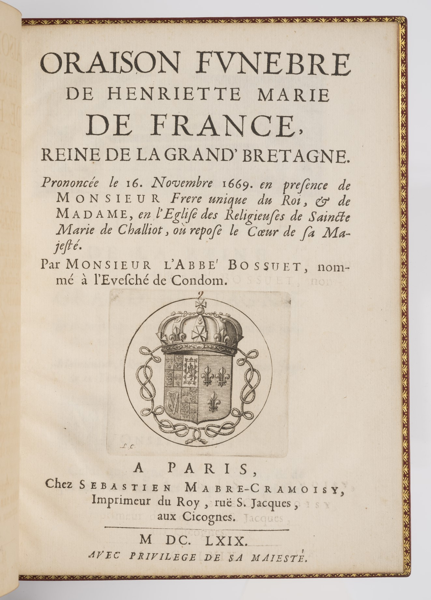
Le public auquel s’adresse Bossuet est donc constitué de plusieurs communautés superposées :
une famille royale en deuil ;
un couvent, dépositaire du souvenir de la fondatrice et d’une mémoire spirituelle ;
des courtisans de la haute aristocratie ;
les « rois », les « princes », les « Grands de la terre » auxquels le psaume initial adresse sa leçon.
selon le principe de l’élargissement constitutif de la prédication, un auditoire « bien loin » (p. 139) au-delà de l’enceinte de l’église
Bossuet parle ici avec grande autorité, faisant « leçon » aux Grands de la terre. Il n’est pourtant pas encore, en novembre 1669, le personnage institutionnel qu’une lecture rétrospective risque de projeter sur lui. Âgé de quarante-deux ans, prédicateur de cour certes déjà illustre, il vient d’être nommé à l’évêché de Condom, mais n’est pas encore consacré ; il ne deviendra précepteur du Dauphin qu’en 1670. S’il a été sollicité pour cette oraison, c’est parce que la question anglaise ne lui est pas étrangère à cette date : dès 1660, après la Restauration de Charles II, il avait prêché devant Henriette-Marie à la Visitation, et Jacques Truchet a montré combien ce sermon antérieur permet de comprendre l’articulation bossuétiste entre les raisons que peut produire la « politique » et l’interprétation supérieure de la Providence. Politique de Bossuet insiste précisément sur cette continuité : Bossuet n’ignore pas les causes secondes (c’est-à-dire la causalité événementielle) ; il prétend les replacer dans un ordre de causalité providentiel qui les subsume.
Les considérations de politique nationale sont ici intimement liées aux circonstances familiales. Henriette-Marie est « reine, fille, femme, mère de rois si puissants » (p. 112) . Elle est est fille d’Henri IV, sœur de Louis XIII, tante de Louis XIV, veuve de Charles Ier, mère de Charles II et de Jacques, et mère d’Henriette-Anne, épouse de Monsieur, destinataire de l’oraison suivante. Elle réunit en sa personne deux maisons royales parmi les plus puissantes d’Europe, et deux histoires nationales tourmentées. Yohann Deguin a proposé de considérer les récits familiaux des Oraisons funèbres non comme de simples ornements généalogiques, mais bien comme des instruments de constitution d’une « mémoire collective, nationale et éminemment politique » : nous le suivons ici sans hésiter. Retracer la vie d’Henrietta-Maria et évoquer sa famille, c’est déjà dessiner une carte de l’Europe et manifester la place de la défunte au carrefour des monarchies française et britannique.
Mais cette circonstance explique moins le texte qu’elle ne fait apparaître sa difficulté. Bossuet entreprend de louer une reine dont l’existence a coïncidé avec l’un des plus extraordinaires désastres monarchiques de l’Europe moderne. Guerre civile, effondrement de l’autorité de Charles Ier, victoire parlementaire, régicide, Commonwealth, Protectorat de Cromwell, exil des Stuart — puis une Restauration, certes, mais qui se révélera fragile. Bossuet doit louer une catholique convaincue qui a vécu dans un royaume protestant, tout en sachant que son catholicisme avait été politiquement conflictuel. Pour le dire plus franchement : Henriette-Marie était détestée par la plupart des Anglais, comme Marie-Antoinette le sera plus tard en France pour d’autres raisons. Bossuet doit célébrer une femme dont il entend mettre en évidence la « prudence » et l’énergie, alors même que presque toutes les entreprises politiques de la reine ont échoué. Enfin, selon la contradiction propre à l’oraison funèbre chrétienne, il faut à Bossuet rendre à une grande princesse tous les honneurs que réclament son rang, sa famille et sa mémoire, tout en expliquant que les trônes, les royaumes et majestés ne possèdent devant Dieu aucune solidité ni aucune valeur réelle.
« Je sens plus que jamais la difficulté de mon entreprise » concède Bossuet (p. 121). Le défi n’était pas certes de ceux qui étaient facile à relever : il fallait Bossuet pour y parvenir.
Préambule : « Les fatales révolutions des monarchies » (p. 119)
Comme nous avons déjà eu l’occasion de le dire : il serait vain de chercher à comprendre le sens des oraisons sans une bonne connaissance du contexte historique, de ses enjeux, et du rôle que Bossuet, en tant que prédicateur, peut jouer dans le cours des événements. Ici, l’arrière-plan est particulièrement riche, dramatique, romanesque même : rien moins que la Grande Révolution d’Angleterre, marquée par une guerre civile suivie par l’instauration d’un nouveau régime, la République.
« Les causes des guerres civiles » (p. 128)
Il y a quelque outrecouidance à vouloir régler en quelques paragraphes une question historiographique complexe, et qui déchire jusqu’à aujourd’hui les spécialistes. Mais nécessité fait loi, dans le cadre de notre cours, et c’est Bossuet qui nous contraint d’aborder « les causes des guerres civiles » anglaises. Pour en savoir plus, je recommande le livre désormais classique d’Ann Hughes, The Causes of the English Civil War, paru chez MacMillan en 1998 (empruntable sur Internet Archive)

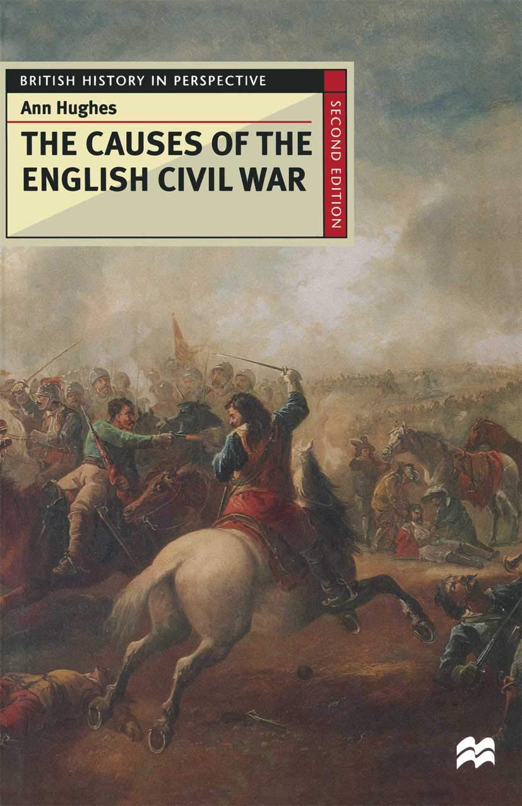
La Grande-Bretagne a connu une période de vingt années de troubles, que les historiens, selon leurs analyses, appellent pour certains « grande Rébellion », et d’autres, « Révolution d’Angleterre ». Bossuet, mêlant causes divines et humaines, en situe l’origine au moment de la rupture d’Henri VIII avec Rome. En 1534, l’Act of Supremacy fait du roi d’Angleterre le chef suprême de l’Église national. Après Henri VIII, les règnes d’Édouard VI, de Marie Tudor puis d’Élisabeth I font connaître au royaume plusieurs changements confessionnels avant la stabilisation, au temps d’Elisabeth, d’une Église anglicane séparée de Rome et protestante dans sa doctrine (« The Elizabethan Settlement »). Aux yeux de Bossuet, c’est donc bien Henri VIII, en « ébranlant l’autorité de l’Église » (p. 119), qui a en quelque sorte légitimé au plus niveau de l’Etat un « esprit de révolte » (ibid.). Les errements successifs de la monarchie et l’absence de véritable autorité spirituelle ont ensuite favorisé l’esprit critique individuel et la relativité des opinions (la « licence effrénée », ibid), qui ont débouché sur la multiplication de sectes (« mille sectes bizarres », ibid.) aux croyances divergentes et, finalement, sur l’indocilité politique.
La lecture de Bossuet est expéditive. Les historiens contemporains ne sont pas tous d’accord sur la nature foncièrement religieuse de la Révolution anglaise, mais il s’en trouve de très sérieux qui considèrent qu’effectivement, ce conflit fut « la dernière des guerres de religion »1 .
En réalité, la crise qui mena l’Angleterre à la guerre civile plonge ses racines dans une panoplie de causes bien plus large. À Elizabeth, la dernière des Tudor, succéda Jacques Ier Stuart, en 1603. Notons au passage que la succession, présentée comme naturelle et évidente par Bossuet, fut en réalité d’une rare complexité : la règle de la primogéniture l’emporta, alors qu’Henri VIII avait expressément exclu de la succession la branche de Margaret Tudor.

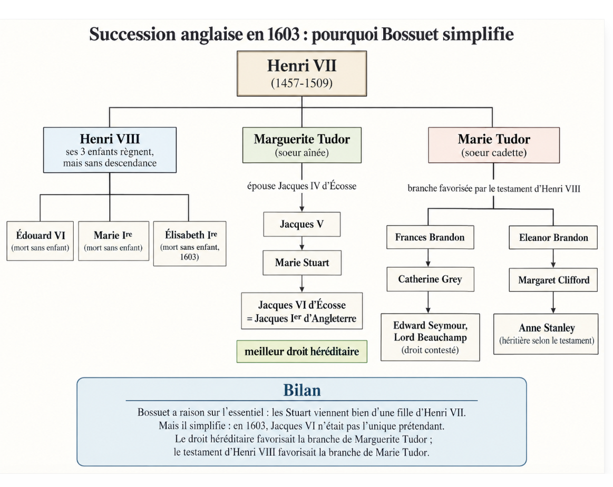
A la mort de Jacques, en 1625, son fils Charles Ier monta sur le trône. Très vite, l’autoritarisme de Charles indisposa. Les tentations absolutistes de Charles Ier heurtaient, plus encore qu’en France, les coutumes politiques de ses royaumes. Il gouverna solitairement, sans Parlement, de 1629 à 1640. Aussi, lorsqu’il fut contraint de le convoquer pour obtenir l’autorisation de lever des impôts, les parlementaires tentèrent-ils de limiter son pouvoir : les désaccords portaient sur la fiscalité, une liturgie jugée trop proche de celle des catholiques, et l’exercice de la prérogative royale. La crise éclata en Ecosse, puis en Irlande, avant d’embraser l’Angleterre. En 1642, le roi et le Parlement entrèrent en guerre.

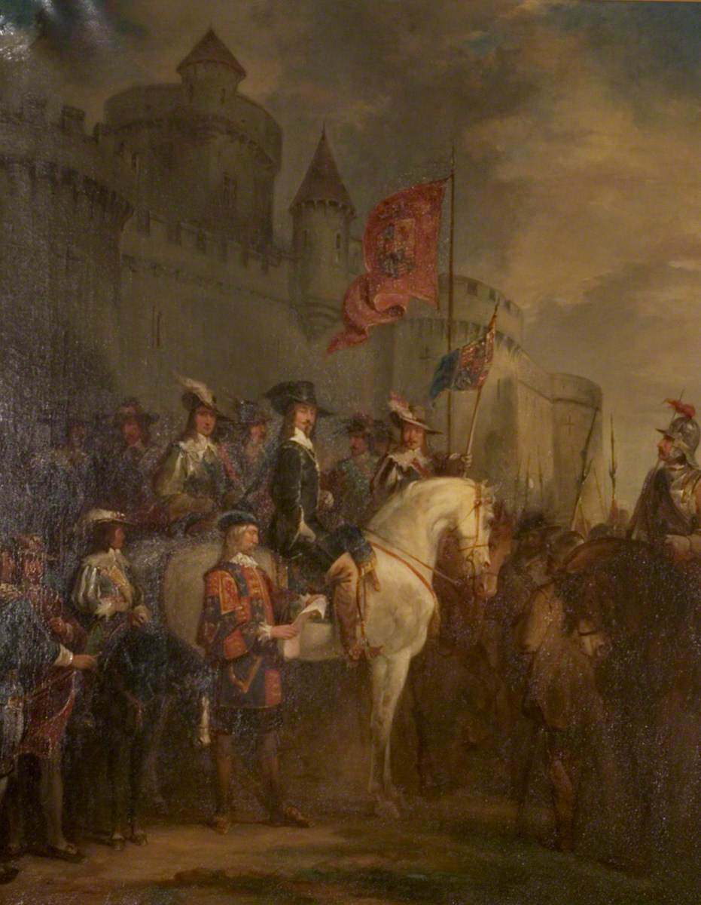
Les Parlementaires n’étaient au demeurant pas tous unis : plusieurs tendances politico-religieuses cohabitaient. La guerre accéléra cette diversification religieuse, en particulier au sein de la nouvelle armée parlementaire (la « New Model Army » de Thomas Fairfax), très réceptive aux idées radicales. Bossuet raille (p. 126) cette prolifération des « sectes », dans laquelle il voit le symptôme d’une désagrégation générale de l’autorité, et la conséquence d’une malencontreuse « liberté » qui dégénéra en licence et provoqua le chaos.
La reine de guerre
L’année où il prit le pouvoir, en 1625, Charles épousa une fille de Henri IV de France, Henriette-Marie, sœur de Louis XIII… et de religion catholique.

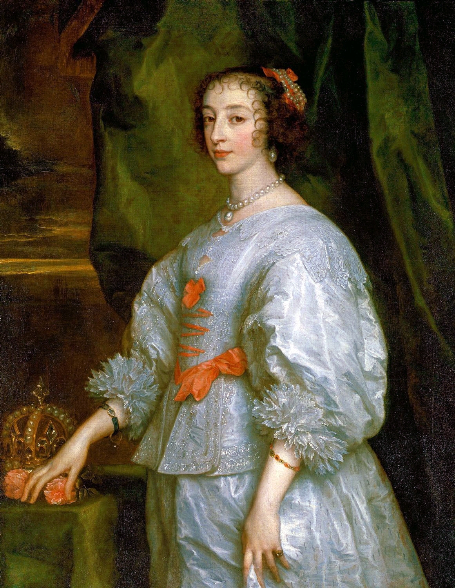
Du point de vue diplomatique, le mariage permit un rapprochement heureux entre les Stuart et les Bourbon, mais il créa d’emblée de graves tensions intérieures dans un pays devenu, au fil des générations, très viscéralement anticatholique. L’arrivée de la reine fut bien plus houleux que le récit très elliptique et édulcorant de Bossuet : « les nuages qui avaient paru au commencement », p. 116 est un doux euphémisme. En réalité, Henriette-Marie est arrivée de France avec ses domestiques, son personnel, ses chapelains (des « prêtres de l’Oratoire » puis des Capucins, comme le rappelle Bossuet, p. 118). Ces catholiques de la Contre-Réforme, très combatifs contre l’hérésie, prirent bruyamment possession de la chapelle de la reine de Somerset House, désormais ouverte au public, au grand scandale des Anglais. Le roi, en 1626, décida de renvoyer en France toute la maison de son épouse : il donna l’ordre de les renvoyer, si nécessaire en usant de la force, comme on fait des « wilds beasts ». La reine, esseulée dans un pays hostile, ne cacha d’abord pas sa colère, mais au fil du temps, contrainte de se mêler à la cour britannique, elle finit par y trouver une place et acquit un ascendant réel sur son mari, dont elle fut finalement très proche dans les années 1630.

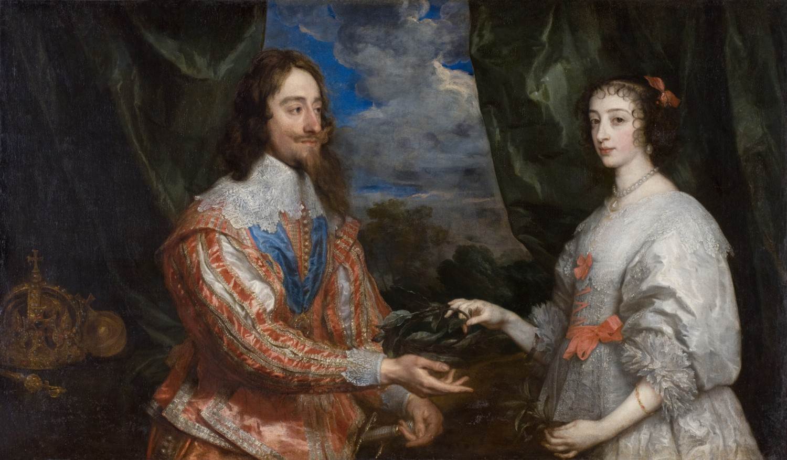
La reine utilisa alors tout son crédit en faveur des catholiques. Plus tard, pendant la guerre, Henriette-Marie joua un rôle essentiel dans la défense de la cause des Cavaliers (c’est le nom qu’on donnait aux royalistes). Elle s’exile aux Provinces-Unies, où elle se met en quête de fonds, d’armes et de munitions, avant de rentrer en Angleterre en 1643. Elle rejoint l’armée royaliste dans le nord du pays, et participe aux négociations. Bossuet n’invente rien lorsqu’il montre la reine multipliant « voyages », « négociations » et « traités ». En 1644, Henriette-Marie est enceinte de la future Henriette-Anne : elle lui donnera naissance à Exeter, mais l’avance de l’armée parlementaires la pousse à quitter le royaume et à rejoindre la France, sans pouvoir emmener sa fille (p. 135). Cet épisode d’aventures donne l’occasion à Bossuet de développer un morceau où le romanesque le dispute à l’épique, avec ses mers démontées ses canonades. Le spectaculaire masque ainsi la triste vérité : après une série de défaites militaires cinglantes, Charles Ier est finalement fait prisonnier, enfermé pendant un temps à l’île de Wight, avant d’être ramené à Londres, jugé à Withehall par le Parlement et, après un procès expéditif, exécuté devant le palais, le 30 janvier 1649. La nouvelle parviendra peu après à Henriette-Marie, exilée en France : Madame de Motteville nous en fait le récit.
Une théorie du complot au XVIIe siècle : Henriette-Marie, âme du « popish plot »
Tant d’activité ne manqua pas de susciter très tôt des adversaires à la reine d’Angleterre. Les protestants ne manquèrent pas de l’ériger en figure supposé du prétendu « complot papiste » décidé à renverser le protestantisme outre-Manche. Henriette-Marie fut en butte à une campagne de discrédit que Bossuet appelle « persécution ».
De fait, la violence de la propagande anglaise contre Henriette-Marie a vraiment été spectaculaire. La campagne anti-Henriette combinait anticatholicisme, xénophobie antifrançaise, accusation de trahison, aussi accusation d’inversion sexuelle de l’ordre politique. Charles était dénoncée comme un « uxorious king », c’est-à-dire un mari follement épris et soumis aux volontés de son épouse. Parmi les textes les plus représentatifs de cette vaste opération de dénigrement, on peut retenir les titres suivants :
William Prynne,The Popish Royall Favourite(1643). Prynne est persuadé qu’un vaste complot tend « set up Popery » et à extirper le protestantisme d’Angleterre : c’est le fameux « popish plot », conspiration « wherein the Queens Majestie hath been chiefe ». Henriette-Marie est présentée comme chef du complot papiste, caricature de la Vierge Marie catholique, gouvernant Charles par l’intimité de l’oreiller.

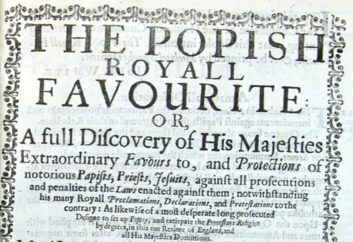
L’acte d’accusation parlementaire de mai 1643 est un acte officiel dont l’importance s’étend plus loin que celle d’un libelle : Henriette-Marie y est formellement accusée de haute-trahison (« impeached of high treason »). On lui reproche d’avoir voulu former une « great popish army » dans le Nord du pays, dont elle était « the chief head and commander », et d’avoir à cette fin fait livrer des troupes et des armes aux ennemis de l’Angleterre.
Le chef-d’œuvre de cette littérature « pamphlétaire » resteThe Great Eclipse of the Sun(30 août 1644). Son titre annonce « Great Charles […] eclipsed by the destructive perswasions of his Queen » et par la faction papiste. Henriette-Marie y devient la lune qui éclipse le soleil royal, un « Popish Planet » qui dérègle le cosmos politique. Elle aurait perturbé le jugement de Charles au point de lui faire prendre la nuit pour le jour, et de l’amener à la conversion, le persuadant que « that Darknesse was Light » et « that it was better to be a Papist, than a Protestant ». Il ajoute que, « under the royall curtaines », elle poussait son époux à favoriser les catholiques. Le pamphlet construit l’image d’une reine séductrice, instrument du Pape pour ramener son époux dans le giron de l’Eglise romaine.

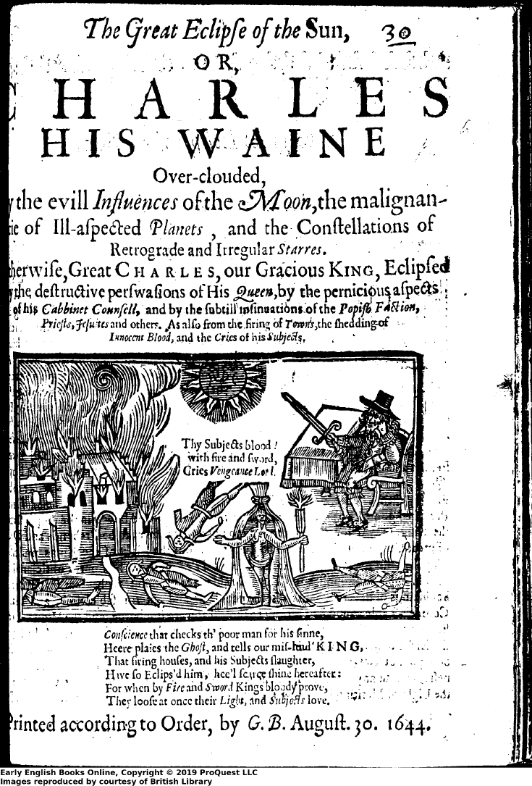
Après la défaite royale de Naseby,The King’s Cabinet Opened(1645) donne à cette légende noire une crédibilité calamiteuse pour la reine : après le désatre militaire, les Parlementaires se sont en effet emparé des papiers du roi enfermés dans son « cabinet », et ils découvrent la correspondance de son épouse. Les papiers furent rapidement publiés, et sont effectivement accablants pour la reine. Par plaisanterie, HenHenriette-Marie se désigne elle-même comme « She-Majesty Generalissima », confirmant les pires rumeurs qui circulaient déjà sur elle. Lucy Hutchinson écrira, dans les mémoires qu’elle consacre à son mari, que ces missives montraient que le roi s’était « given himself up to be governed by the queen in all affairs both in state and religion ».

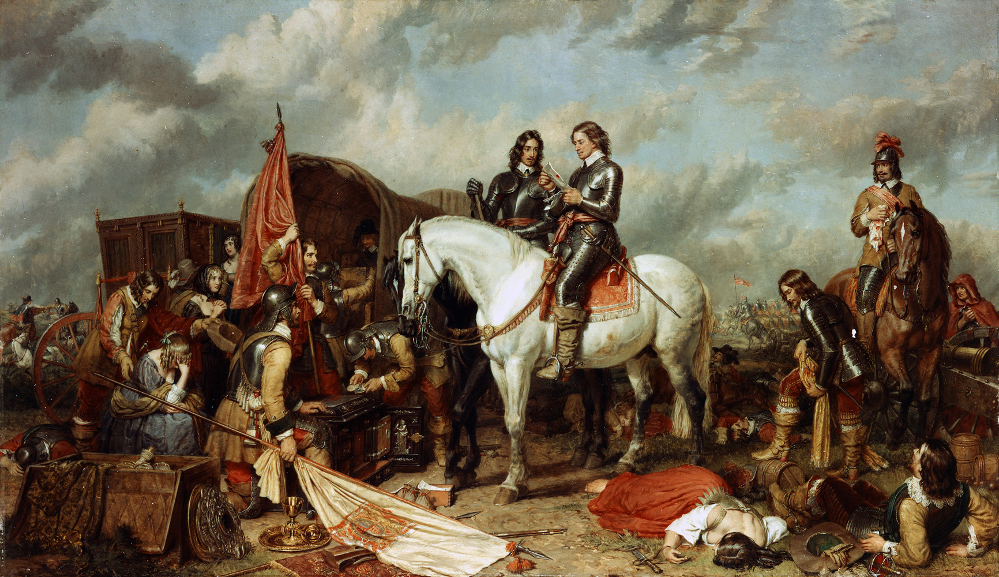
Bref, la propagande protestante repose sur un fond de vérité : Henriette-Marie était bel et bien catholique, sans aucune envie de se convertir, et protégeant autant qu’elle l’a pu ses coreligionaires. Elle entretenait effectivement des liens avec Rome, collecta effectivement des fonds et acheta, effectivement, des armes aux Provinces-Unies. Elle manifesta une « agentivité » et joua de fait un rôle politique beaucoup plus actif que celui attribué généralement à une reine consort de l’époque moderne. Telle est la difficulté pour l’historiographie d’aujourd’hui, comme le montre Caroline Hibbard : ces faits réels sont intégrés par ses adversaires à l’imaginaire d’un « Popish Plot ». A partir d’éléments incontestables, les ennemis d’Henriette-Marie en ont fait le centre d’une théorie du complot qui dépassait de loin son influence réelle. La reine, certes, agissait réellement, et Bossuet amplifie encore son action ; mais en réalité, l’image de l’étrangère catholique pilotée par Rome et gouvernant Charles Ier relève surtout de la polémique. 2.
La recherche actuelle distingue, dans les représentations de la reine, quatre périodes, qu’il est important d’identifier pour comprendre l’opération d’idéalisation de la reine opérée par Bossuet. Je vous renvoie à un article passionnant d’Alice Leroy, « “The Fault is that she is my wife” : l’ambivalence des représentations d’Henriette-Marie (1625-1649) », paru dans Sillages critiques, 30, 2021.
Au début du règne, les représentations officielles de la reine insistaient sur son rôle domestique et conjugal, effaçant autant que possible son identité française et catholique.
Dans les années 1630, la reine devient plus visible. Les tableaux de Van Dyck manifesent l’harmonie entre Charles et Henriette, gage et reflet de l’harmonie du royaume. Sont aussi mises en avant sa fécondité et sa maternité, à l’image de celles de la Vierge Marie ;
Pendant la guerre civile, comme on l’a vu, les « Roundheads » (les Parlementaires) se déchaînèrent contre la reine ; l’intercesseuse devient manipulatrice, la maternité mariale devient signe de « papisme », la compagne devient archétype de la mauvaise conseillère, et la femme devient masculine « généralissime ».
Enfin, Leroy termine son article en montrant que la Restauration retourne une nouvelle fois l’image. Après la diabolisation des années 1640, Henriette-Marie redevient épouse dévouée, mère héroïque et reine magnanime ; après sa mort en 1669, des textes anglais célèbrent sa capacité à traverser les épreuves auxquelles elle a été soumise . Dans les années 1660, la représentation renoue donc, en partie, avec celle que Van Dyck avait construite avant les guerres civiles.
L’un des apports les plus novateurs de l’article d’Alice Leroy consiste à montrer que la légende noire et la légendre dorée d’Henriette-Marie mobilisent les mêmes signes, mais en inversant leur sens. La propagande renverse contre Henriette-Marie les instruments mêmes de représentation que le couple royal avait employés ; puis de nouveau, dans les années 1660, la communication royale officielle reprend la stratégie originelle. La présence constante de la reine auprès de Charles pouvait apparaitre aux yeux des uns gage d’harmonie, aux yeux des autres la preuve de l’emprise sur le roi d’une papiste étrangère ; son ardeur à défendre son mari les armes à la main pouvait nourrir un imaginaire héroïque et romanesque, ou témoigner de l’inversion des genres, de la ruine de l’ordre patriarcal, et d’une usurpation du pouvoir masculin ; le conseil au roi peut être perçu comme emprise, la maternité devient menace dynastique, etc . Cette réversibilité des signes explique « l’ambivalence » dont parle Alice Leroy.
Revenons à Bossuet. L’entreprise de Bossuet s’inscrit donc dans la même perspective que celle des représentations britanniques officielles de la même époque, et qui consiste à inverser le portrait au vitriol élaboré par les protestants anglais. Bossuet produit ainsi avec un grand systématisme, pour un public français et catholique, une vision idéalisée qui fait d’Henriette-Marie une figure exceptionnelle, qui tient à la fois de l’héroïne de roman et de la sainte. Toutes les accusations des parlementaires anglais sont retournées point par point :
l’influence conjugale devient le « charme innocent » et la persuasion raisonnable qu’exerce Henriette-Marie, véritable nouvelle Esther ;
les agissements catholiques deviennent service de l’Église et de l’État ;
l’argent et les armes effectivement fournies depuis les Provinces-Unies deviennent la preuve de son héroïque fidélité au roi son mari ;
même l’image de la « Generalissima » papiste, qui avait suscité un épouvantable tollé outre-Manche, est récupérée au profit de la défunte par Bossuet : il la présente comme celle qui engage sa fortune personnelle (ses « joyaux », p. 131) et « marche comme un général » (p. 133) ;
l’étrangère accusée d’avoir conduit Charles et son royaume à l’abîme devient dans la bouche de Bossuet « une main si habile » qui aurait sauvé l’État « si l’État eût pu être sauvé » (p. 115).
Le diable incarné : Oliver Cromwell
Après le régicide (1649), on entre dans la période qu’il faudrait en toute rigueur appeler « l’Interrègne », mais qu’on associe à l’expérience anglaise de la république, le « Commonwealth ». Je ne dis rien de l’extraordinaire portrait que Bossuet donne d’Oliver Cromwell (1599-1658) : nous l’étudierons en détail en temps voulu. Originaire de la gentry, issu d’un milieu assez modeste, Cromwell se révéla général hors-pair et, au fil des victoires, acquit un ascendant sur l’armée parlementaire (« New Model Army »), très influencée par les idées « indépendantes », c’est-à-dire calvinistes hostiles à une Eglise centralisée. Il s’employa à purger le Parlement, comme le rappelle Bossuet : « cette armée, tout indépendante, réforme elle-même le Parlement », p. 138. On appelle par dérision cette assemblée réduite le « Parlement croupion », en anglais « Rump ». Cromwell joua ensuite un rôle déterminant dans le procède du roi (janvier 1649), et l’établissement de la République dont il devient Lord Protector en 1653, donnant à son gouvernement une forme de plus en plus monarchique. Roi sans couronne, il régna juqu’à sa mort inopinée en 1658.

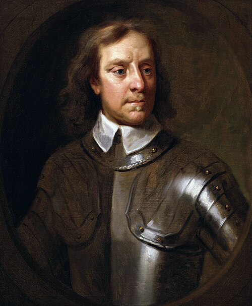
Après la mort de ce fléau de Dieu, le régime républicain ne tarda pas à se désagréger. Le général George Monck entama des négociations en vue du retour des Stuart, et Charles II put rentrer en Angleterre et monter sur le trône de son père en 1660. Bossuet donne de la Restauration anglaise une vision fortement simplifiée lorsqu’il affirme que les Anglais seraient revenus à la monarchie « déçus par leur liberté » (p. 141) : la crise fut complexe et rien n’était écrit. Dans l’oraison, la Restauration constitue bien sûr le terme mis par la Providence à l’épreuve que Cromwell fit subir à son peuple. L’année suivante, la fille d’Henriette-Marie épousa Monsieur, renouant fortement le lien dynastique entre l’Angleterre et la France. Quant à la reine, elle finit ses jours en France et mourut à Colombes en 1669.
Notons seulement, avant d’aborder le texte, qu’Henriette-Marie ne fut pas la seule femme à s’illustrer au cours de cet épisode particulièrement dramatique et sanglant de l’histoire du Royaume-Uni : vingt ans de troubles, dont sept ans de guerre civile suivi de douze années d’expérimentation républicaine on fait 200 000 morts directes ou indirectes, d’après les dernières enquêtes historiques 3. Cette période de crise d’une société patriarcale fut en réalité favorable à l’émergence de voix et d’une agentivité féminines exceptionnelles, dans le camp royaliste, mais aussi chez les Puritaines, des châtelaines défendant leur château attaqué aux prophétesses interpellant Cromwell . Je vous renvoie sur le sujet au premier ouvrage de Claire Gheeraert-Graffeuille, La Cuisine et le forum, qui comporte une section sur Henriette-Marie, et à son second livre consacré à celle qui fut la première historienne de la Grande Révolution d’Angleterre, Lucy Hutchinson. 4

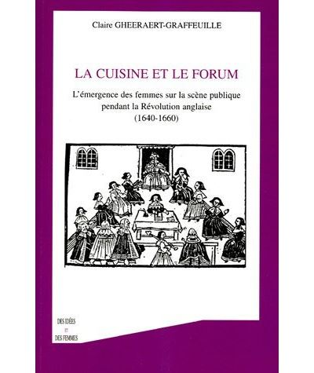

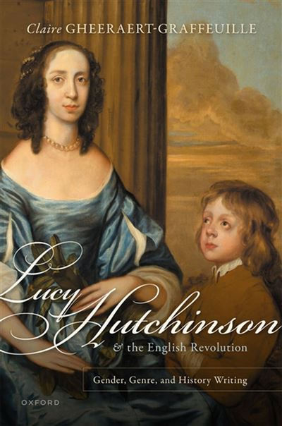
Bossuet affirme qu’il n’écrit pas en historien (« je ne suis pas ici un historien », p. 122.). De fait, Bossuet retrace avec précision les événements marquants des vingt années de guerre, mais il n’écrit pas en historien soucieux d’exactitude et de neutralité: ces tribulations d’une reine, qui connut le trône, la guerre, l’exécution de son mari, l’exil et la Restauration, Bossuet les raconte, certes, mais il prend soin de les métamorphose en itinéraire spirituel. Ce n’est pas le bruit et la fureur du conflit qui intéresse Bossuet, mais d’observer comment le doigt de Dieu, dans l’ombre, et à travers les décisions des hommes et des femmes, guide les événements. C’est pourquoi, dans l’oraison, la Restauration n’est en rien le véritable dénouement : à cette date, la reine n’a déjà plus d’attaches aux choses humaines, et son intérêt est au Ciel.
Lecture suivie
Introduction. « Reges, intelligite ». L’histoire, leçon des rois
Les deux sources de l’autorité
L’oraison s’ouvre moins sur Henriette-Marie que sur cette question de l’autorité du prédicateur chère à Anne Régent. La première source est au Ciel, comme le montre le verset répété trois fois comme une incantation (Ps, 2, 10) : « Et nunc, Reges, intelligite ; erudimini, qui judicatis terram. », que Bossuet traduit ainsi : « Maintenant, ô rois, apprenez ; instruisez-vous, juges de la terre » (p. 111, 112, 113). Les assistants vont recevoir une leçon – et quelle leçon. On a vu, dans un billet précédent, combien le psaume II contribuait à la constitution de l’ethos prophétique bossuétiste : je n’y reviens pas, et je renvoie à Anne Régent qui a consacré un développement à cette question.
Si la première source d’autorité est dans le Ciel, l’exorde installe simultanément une seconde source d’autorité : celle de l’histoire et de la succession des événements eux-mêmes. C’est le sens de la phrases selon laquelle Dieu enseigne les rois « non-seulement par des discours et par des paroles, mais encore par des effets et par des exemples » (p. 112). Le lieu commun de la rhétorique grecque, qui aimait à opposer les paroles et les actes, se trouve ici réactivé par le providentialisme chrétien 5. L’histoire elle-même semble ainsi devenir parole. La tension au cœur de l’oraison émerge aussitôt : Bossuet affirme que « les choses parleront assez d’elles-mêmes » (p. 112), mais toute la suite du discours consiste précisément à sélectionner ces « choses », à les rapprocher, à les opposer, les mettre en ordre et finalement à en délivrer le sens. Bossuet réduit la complexité enchevêtrée de l’histoire anglaise à uneévidence qui relève en réalité d’une construction hardie et artificielle 6 . Bossuet aimer à présenter la Providence comme un ordre préétabli qu’il se contente de découvrir et de révéler à ses auditeurs, alors que tout son art consiste à agencer le cours des événements pour le métamorphoser en une épopée sacrée.
« Mais j’interromps l’ordre de mon histoire » (p. 135) : « évidence » et « simplicité »… ou savant « montage » ?
Le plan annoncé par Bossuet paraît pourtant conforme à cette simplicité parfaite qu’il ne cesse jamais de revendiquer : le rôle de l’écrivain est de « faire paraitre [la vérité] dans une grande évidence », explique-t-il à Fénelon 7 . Dieu a fait éprouver à Henriette-Marie deux situations qui étaient en réalité deux leçons : la prospérité, dont elle a bien usé, en faisant profiter les autres ; et l’adversité, dont elle a su profiter elle-même. « Dans l’une elle a été bienfaisante, dans l’autre elle s’est montrée toujours invincible », p. 113.
Telle est la vertu : savoir faire un bon usage aussi bien des bonnes fortunes que Dieu nous envoie que des épreuves que Dieu permet, pour notre salut. La théologie augustinienne accorde en effet une importance cruciale à la distinction entre « usage » et « jouissance » : ce qui compte, ce n’est pas la nature des situations qui nous adviennent, mais la façon dont nous y répondons. Jouissons-nous égoïstement des biens qui nous sont accordés ou savons-nous en user pour le bien du prochain ? Maugréons-nous contre les difficultés ou tentons-nous de les mettre à prodit pour devenir meilleurs ? Henriette-Marie, à en croire Bossuet, a réussi à tirer le meilleur parti des deux états où la « fortune » l’avait mise.
Ainsi le plan apparait simple et évident, à la fois encomiastique et chrétien : Henriette-Marie a employé sa puissance royale pour le bien, puis souffert ses maux avec vertu. Mais lorsqu’on considère le détail du texte, on s’aperçoit que la disposition réelle est beaucoup plus troublée. La biographie est sans cesse interrompue par l’histoire religieuse de l’Angleterre ; l’éloge de la reine débouche sur le retour à Henri VIII ; la Réforme mène à la guerre civile ; celle-ci fait surgir le portrait de Cromwell, lui-même fascinant ; le récit revient ensuite aux aventures épiques ou rocambolesques, de la reine en exil ; puis la naissance d’Henriette-Anne ; puis l’échec politique, transformé en médiation du malheur pour renforcer la vertu ; enfin la Restauration, qui prend à contre-pied les attentes : il n’est pas le happy end glorieux, parce qu’il est dépassé par le détachement spirituel de la reine. L’oraison n’obéit donc pas seulement à la bipartition promise : elle procède plutôt par bifurcations, reprises, analepses, anticipations et changements d’échelle. La notion de « montage » proposée par Christine Noille pour la prédication bossuétiste, quoiqu’élaborée sur un sermon différent, est particulièrement fécond pour comprendre l’oraison d’Henriette-Marie. Elle invite à observer les raccords réels, plutôt qu’à supposer une architecture scolaire uniforme et préméditée. Elle invite aussi à considérer le décalage entre l’affectation de simplicité et la complexité réelle de la construction.
Chaque oraison, on l’a dit, est à envisager dans sa singularité : celle-ci fait résonner le fracas d’une révolution, dépeint un adversaire moralement condamnable et néanmoins redoutable, et une femme dotée d’une agentivité diplomatique, politique et militaire. L’enjeu du texte peut donc maintenant être formulée : par quelles opérations de composition, de figuration et d’autorité Bossuet parvient-il à convertir l’échec politique d’une femme exceptionnelle en leçon adressée aux rois ?
On verra d’abord que Bossuet convertit une grandeur royale en structure de visibilité destinée à devenir spectacle et leçon. Il transforme l’éloge dynastique en scène d’instruction politique et religieuse. Il affecte avant tout de donner à voirdes faits.
Il donne ensuite à entendre : il fait parler l’histoire, c’est-à-dire qu’il soumet la Révolution anglaise à une enquête causale. Bossuet ne cesse de distinguer deux niveaux : celui des causes secondes, c’est-à-dire purement humaines ; il nous fait voir l’enchainement des faits, logique, explicable par la raison, mais qui nous donne l’image de la Révolution comme un lamentable gâchis ; et le niveau de la cause première : la Providence, qui n’a pas sans raison permis la monstrueuse « tyrannie » (p. 112) qui, selon le prédicateur, a frappé les Îles britanniques, et suscité Cromwell, qui fut son fléau avant d’être à son tour abattu.
On montrera enfin que l’histoire événementielle est progressivement convertie en itinéraire intérieur : l’extraordinaire agentivité d’Henriette-Marie est nécessaire pour que son impuissance finale soit interprété comme un détachement supérieur et prenne ainsi tout son sens : à la Restauration, Henriette-Marie n’est plus ni une princesse en exil, ni une souveraine aux yeux du monde – elle a réussi à échapper à l’histoire.
« Vous verrez dans une seule vie » (p. 112) : l’église comme théâtre
« Un spectacle proposé aux hommes » (p. 113) : une scène dynastique
Comme souvent, Bossuet joue sur toute la palette des possibilités qu’offre l’énonciation. Il est censé évoquer le souvenir d’une défunte devant sa famille, et en réalité il ouvre son discours sur une apostrophe aux vivants, et surtout aux plus puissants, les monarques : « Maintenant, ô rois, apprenez ». L’oraison ne sera pas d’abord un tribut de mémoire, mais bien une prédication politique.
La vie des rois est soumise à une oscillation que manifeste des balancements antithétiques : « Soit qu’il élève les trônes, soit qu’il les abaisse, soit qu’il communique sa puissance aux princes, soit qu’il la retire à lui-même et ne leur laisse que leur propre faiblesse […]. » (p. 111) L’opposition « communique/retire » donne à la puissance humaine la structure grammaticale d’un prêt révocable, qui débouche sur une conclusion d’ordre économique : « leur majesté est empruntée » (p. 112). Les rois ne sont pas dépossédés, comme aurait dit Pascal, mais leur pouvoir ne leur appartient pas, il ne leur est remis qu’en dépôt. Nous nous trouvons ici en présence d’un bel exemple de la « conversion » des valeurs humaines, dont parle Pierre Lyraud dans son ouvrage à paraître aux PURH en novembre. Ce régime de grandeur empruntée résout, au moins provisoirement, la contradiction essentielle du genre de l’oraison funèbre : l’Évangile rend certes suspect tout attachement aux grandeurs terrestres, mais les rois chrétiens sont conscients que les grandeurs qui leur sont conférées ne leur appartiennent pas en propre. On peut les admirer sans craindre de tomber dans l’idolâtrie, si eux-mêmes se souviennent qu’ils sont simples dépositaires de leurs titres. Bossuet peut donc célébrer les défunts illustres sans renoncer aux leçons du Christ. Si Henriette-Marie est véritablement reine, grande, et admirable, c’est précisément dans la mesure où elle-même sait que sa majesté ne lui appartient pas, et qu’elle doit la soumettre à la volonté de Dieu, pour le meilleur, et aussi pour le pire.
« Une grande Reine, Fille, Femme, Mère de Rois si puissants, et Souveraine de trois royaumes » (p. 112). La reine n’est pas un individu isolé : elle est un maillon dans une généalogie prestigieuse, ou pour mieux dire : un concentré de puissance dynastique. Son identité est moins personnelle que familiale, et relationnelle « Fille, Femme, Mère ». Henriette-Marie est traversée par des réseaux de filiation et d’alliances, et porteuse d’une souveraineté sacrée qui lui vient d’une généalogie lointaine, remontant à saint Louis et Charlemagne (p. 114). C’est toute l’histoire européenne et l’histoire de la chrétienté qui circule dans sa personne : fille des Bourbons, épouse d’un Stuart, mère de souverains britanniques. Sa grandeur souveraine, Henriette-Marie la doit à Dieu (cause première), mais aussi (causes secondes), au plan diachronique, au sang dont l’origine remonte aux sources sacrées de la monarchie française et, au plan synchronique, aux relations qu’elle entretient avec les monarchies d’Europe.
« Un de ces exemples redoutables » (p. 112) : Le théâtre de la chute des princes
Cette majesté accumulée ne rend que plus frappants les renversements inattendus qu’a prise sa « fortune » au cours de sa vie :
« Vous verrez dans une seule vie toutes les extrémités des choses humaines : la félicité sans bornes, aussi bien que les misères […] la rébellion longtemps retenue, à la fin tout à fait maîtresse ; nul frein à la licence ; les lois abolies ; la majesté violée […] l’usurpation et la tyrannie sous le nom de liberté ; une Reine fugitive […] neuf voyages sur mer […] un trône indignement renversé, et miraculeusement rétabli » (p. 112).
Etonnant passage, où l’on entend la voix d’un prophète mêlée à celle d’un bonimenteur du Pont-Neuf hélant les passants : Bossuet promet du spectacle à coups d’accumulations paroxystiques, afin de provoquer un effet de saisissement sur l’auditeur devenu spectateur d’une expérience historique. La vie d’Henriette-Marie devient un théâtre des vicissitudes humaines à contempler pour comprendre ce que l’histoire fait à une existence. Le prédicateur attire l’attention comme le ferait un bateleur ou un montreur de merveilles, mais il retourne ensuite le plaisir du spectaculaire contre le spectacle lui-même, suite de catastrophes dont le sens est ailleurs que dans les désastres décrits. Certes, l’oraison funèbre exploite le plaisir narratif de l’extraordinaire et le plaisir propre au spectateur de théâtre, mais il s’agit, là encore, de convertir ces attentes du public pour les amener à recevoir une leçon morale, religieuse et théologique. L’hypotypose annoncée cesse d’être procédé d’appel pour devenir dispositif spirituel et enseigner en réalité à détacher le regard du « spectacle » lamentable d’un monde en convulsions, dont la syntaxe paratactique mime la désagrégation.
Niée dans son identité individuelle d’abord par ses attaches familiales, Henriette-Marie est une seconde fois niée en tant que femme, et happée par l’ordre transcendant : elle n’est plus qu’un « exemple redoutable » (p. 112), transformée en leçon, objet du discours et support visible d’une doctrine qui la dépasse. « La sage et religieuse Princesse […] n’a pas été seulement un spectacle proposé aux hommes », écrit Bossuet ; « elle s’est instruite elle-même, pendant que Dieu instruisait les princes » (p. 113). Le miroir des princesest réflexif : les rois la contemplent, mais elle se mire elle-même dans la méditation sur sa propre existence. Elle est à la fois agent des volontés de Dieu, et capable d’en interpréter les desseins.
On touche ici à la fonction historique de l’oraison comme action de parole. La cérémonie rend compatibles plusieurs mémoires qui auraient pu entrer en conflit : celle d’une reine de haut rang, celle d’une dynastie vaincue puis restaurée, celle d’une catholique dans l’Angleterre protestante, celle enfin d’une mère et d’une épouse dont la famille est présente dans l’assistance. La parole funèbre ne se contente donc pas de conserver une mémoire : elle l’unifie, la définitet la met en ordre pour l’usage des survivants. Ce phénomène de reconstruction est particulièrement visible lorsque Bossuet passe sans rupture véritable du passé de la reine à l’avenir de Monsieur et de Madame : la mémoire familiale devient programme diplomatique.
Le « cœur » et la « naissance » (p. 113) : noblesse oblige
Henriette-Marie vient de très bon lieu, mais « son grand cœur a surpassé sa naissance » : si la reine se réjouit de régner, « c’est parce qu’elle pouvait contenter le désir immense qui sans cesse la sollicitait à faire du bien » et Bossuet ose une pointe, un véritable concetto, sacrifice stylistiques offert aux mondains qui se plaisaient à ces tournures : « elle perdait ce qu’elle ne donnait pas » (La pointe repose sur un paradoxe fondé sur le renversement d’une évidence économique. Dans la logique ordinaire, ce qu’on ne donne pas, on le garde.). Le trône est donc converti en instrument de charité, le pouvoir devient capacité de donner, et la vertu aristocratique de libéralité, loin de s’abîmer en dépenses somptuaires ou en vaine ostentation, est employée utilement au service du bien. Être riche et puissant est un péril pour l’âme, mais si l’on parvient à surmonter les tentations inhérentes aux charges, au pouvoir et à la fortune, on peut s’élever au-dessus du commun des mortels, qui ne subit pas les mêmes séductions du mal. C’est parce qu’elle excède moralement la dignité de son sang que Bossuet peut écrire sans hyperbole : « Toute autre place qu’un trône eût été indigne d’elle » (p. 114)
Le portrait stylistique culmine dans une série de termes complémentaires définissant un portrait politique : « Douce, familière, agréable autant que ferme et vigoureuse, elle savait persuader et convaincre aussi bien que commander, et faire valoir la raison non moins que l’autorité » (p. 115). Cette phrase constitue comme une petite théorie du pouvoir légitime. Les couples « douce / ferme », « persuader / commander », « raison / autorité » suggèrent une coïncidence des contraires dont toute la pensée traditionnelle et renaissante considère qu’elle est le principe même de l’harmonie : la persuasion n’est pas l’alternative faible au commandement, elle la complète ; la raison et l’autorité s’épaulent mutuellement, etc.
Bossuet ne cantonne pas la reine à un rôle passif ; il admet et reconnaît au contraire ses compétences politiques de premier ordre : « une main si habile eût sauvé l’État, si l’État eût pu être sauvé » (p. 115). Si la monarchie Stuart est tombée, ce n’est ni en raison de l’activisme de la reine, ni de son impéritie, c’est uniquement parce que des raisons humaines (la décadence progressive de l’Etat anglais depuis la faute tragique de Henri VIII) et célestes (Dieu voulait châtier l’Angleterre et que la reine fût un « exemple ») l’ont emporté sur ses qualités personnelles. Telle est toute la difficulté de l’éloge : le genre encomiastique exige que Bossuet manifeste les vertus de femme d’action de la reine, et la Providence exige qu’Henriette-Marie échoue dans toutes ses entreprises. Pour résoudre cette tension, le prédicateur aura soin de distinguer toujours entre la valeur de l’action (irréprochable) et son efficacité, qui a été nulle sans qu’elle puisse en être rendue responsable.
Esther et Judith (p. 115-116)
Face à une propagande anglaise qui ne cessait de reprocher à la reine de porter la culotte et de gouverner son mari (les pamphlets puritains reproduisent ad nauseam le thème de « l’uxorious king » jouet de son épouse), Bossuet prend garde de ne pas conférer à son héroïne les attributs d’un souverain masculin. Pour y parvenir, il mobilise deux figures bibliques qui pourraient au premier abord paraître contradictoires.
La première, la plus déroutante, est celle de Judith. Le Livre de Judith nous raconte en effet l’histoire d’une Juive (la Juive par excellence, Judith), qui s’introduit dans le camp du général ennemi Holopherne en se faisant passer pour une espionne apportant des informations. Une fois dans la tente du général, elle le séduit, l’enivre, et lui coupe la tête qu’elle rapporte triomphante au peuple d’Israël. A la suite du Caravage, les peintres du XVIIe siècle offrent de cette scène dramatique et spectaculaire de nombreuses représentations.

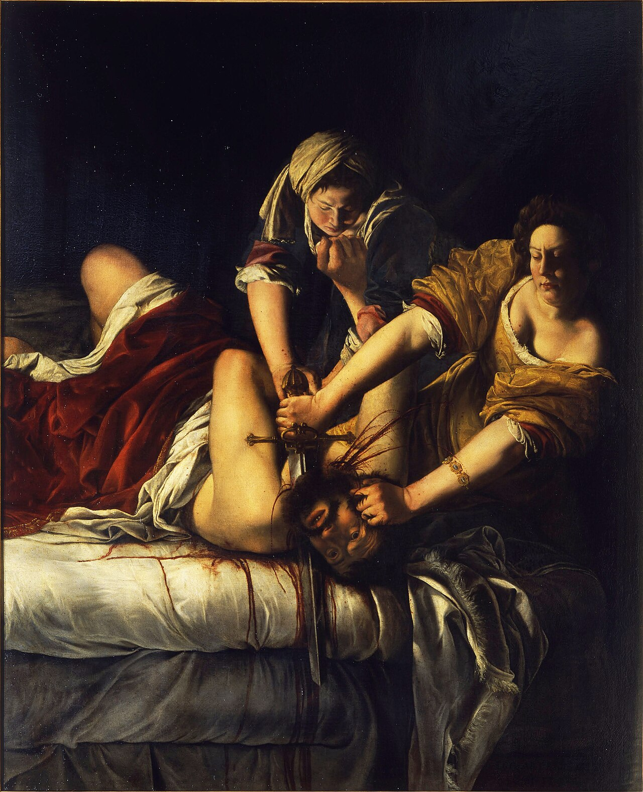
Henriette-Marie ne ressemble pas trait pour trait à Judith mais, d’une part, elle montre d’une façon générale que Dieu peut, quand il lui plaît, utiliser les attraits des femmes pour faire advenir sa volonté ; et d’autre part, l’image de Judith s’accorde avec celle de l’héroïne guerrière, « général » de l’armée du Nord, approvisionnant les royalistes en armes et munitions, et tentant de couper symboliquement la tête de Cromwell, nouvel Holopherne.
Plus attendue est la seconde image féminine biblique, celle d’Esther, modèle naturel de la reine consort chrétienne. Au temps de l’exil à Babylone, Esther était une juive mariée au roi Assuérus. Au moment où le roi, sur une fausse dénonciation, s’apprête à massacrer les Juifs, la reine lui révèle qu’elle est juive elle-même et, par sa douceur et ses charmes, apaise le roi, dont les yeux se dessillent et qui comprend alors que les Israéliens ont été calomniés. La comparaison est transparente : Henriette-Marie (Esther), la bonne conseillère, par la seule force de la douceur de ses charmes, a ouvert les yeux de Charles (Assuérus) qui a compris que les catholiques étaient injustement persécutés. Bossuet insiste sur le point contesté par les Puritains anglais : la reine intercède, certes, mais « sans commettre l’autorité du Roi son seigneur » : elle utilise son crédit « à procurer un peu de repos aux catholiques accablés » (p. 116). La comparaison tranche singulièrement avec celles répandues par les Parlemantaires anglais, qui voyaient plutôt dans Henriette-Marie une figure de Jézabel.
Je ne reviens pas sur la chapelle (« Les prêtres et les religieux […] qui vivaient en Angleterre pauvres, errants, travestis […] venaient reprendre avec joie les marques glorieuses de leur profession dans la chapelle de la Reine, et l’Église désolée […] faisait retentir hautement les cantiques de Sion dans une terre étrangère » (p. 118-119), traitée dans le préambule. Rappelons seulement que le récit de Bossuet n’a rien de neutre : le catholicisme d’Henriette-Marie fut politiquement conflictuel ; sa chapelle, ses prêtres, ses patronages et les conversions liées à sa cour nourrirent un anticatholicisme très vif sous Charles Ier, que confirme l’historiographie récente 8 . Bossuet ne ni pas l’action religieuse de la reine, il l’amplifie mais la charge d’une autre signification.
Généalogie du sang, généalogie de la vérité
L’ancienneté est une qualité vraiment fondamentale chez Bossuet. Plus on s’approche de la Création du monde, ou de la vie du Christ, plus on remonte la source de la vérité. Les « nouveautés » (p. 125) doctrinales ne sauraient donc être que de fausses croyances hérétiques. Chez Henriette-Marie, l’ancienneté dynastique et l’ancienneté doctrinale se répondent jusqu’à se confondre. Bossuet construit une femme de la continuité et de la fidélité aux origines, dans une Angleterre définie, à l’inverse, par la rupture et la nouveauté menant au chaos.
Le premier usage de l’ancienneté est évidemment généalogique. Henriette-Marie appartient à une lignée dont Bossuet étire les racines aussi loin que possible : Mérovée, Childebert, Charlemagne, saint Louis, Henri IV ; puis, par son mariage, elle rejoint les Stuart, eux-mêmes issus de « ces rois antiques dont l’origine se cache si avant dans l’obscurité des premiers temps » (p. 114). La profondeur temporelle vaut comme capital symbolique : une grande maison se reconnaît à ce qu’elle résiste au temps. Mais Bossuet fait immédiatement passer cette généalogie politique dans la généalogie religieuse. L’« attachement immuable à la religion de ses Ancêtres » est présenté comme « la gloire de sa Maison aussi bien que celle de toute la France », cette France qui, depuis près de douze siècles, n’aurait vu sur le trône que « des princes enfants de l’Église ». Et la fidélité confessionnelle d’Henriette se condense dans une formule de filiation : rien ne pourra « la détacher de la foi de saint Louis » (p. 115). Être fille de saint Louis signifie donc simultanément descendre d’un roi et persévérer nécessairement dans sa religion : tels sont les devoirs qu’implique le sang, la foi et la fidélité aux ancêtres.
C’est pourquoi l’expression « doctrine ancienne » (p. 118) est beaucoup plus chargée qu’elle n’en a l’air. Bossuet oppose « l’erreur et la nouveauté », qui « se faisaient entendre dans toutes les chaires », à cette « doctrine ancienne » réduite à « parler à l’oreille ». L’antithèse n’est pas simplement chronologique. Dans la polémique catholique classique, l’ancienneté vaut présomption de vérité parce qu’elle signifie continuité avec l’Église apostolique, tandis que la « nouveauté » signale la rupture introduite par l’hérésie, des erreurs sans fondement historique et des infédilités aux enseignements des Evangiles transmis par la Tradition. La Réforme, au contraire, se signale par une rupture et porte contre elle la date de sa naissance : c’est en 1534 qu’Henri VIII « commença d’ébranler l’autorité de l’Église ». L’hérésie possède une date de naissance récente, et un mode d’être : l’innovation (« nouvelle doctrine », p. 125, qui s’oppose à « doctrine ancienne).
Dès lors, Henriette-Marie devient un chaînon de la continuité. Dans une Angleterre que Bossuet décrira comme ayant « tant changé, qu’elle ne sait plus elle-même à quoi s’en tenir » (p. 119), la reine demeure « immuable », port et point fixe. Là où le royaume passe de réforme en réforme, puis de secte en secte toujours plus folle, elle « conserve » la vraie foi et la pure Tradition : elle « conserve les précieux restes » de l’Église persécutée (p. 120) ; sa chapelle de Somerset « rendait à l’Église sa première forme » ; les prêtres y « reprenaient » les marques de leur profession : les verbes martèlent le lien au passé, et mènent à une Restauration pleine et entière, c’est-à-dire un « rétablissement de l’Église ». Tout ce lexique suppose moins la création d’un ordre nouveau que la restitution d’un ordre antérieur. Même la conversion des Anglais au catholicisme est pensée moins comme innovation que comme retour.

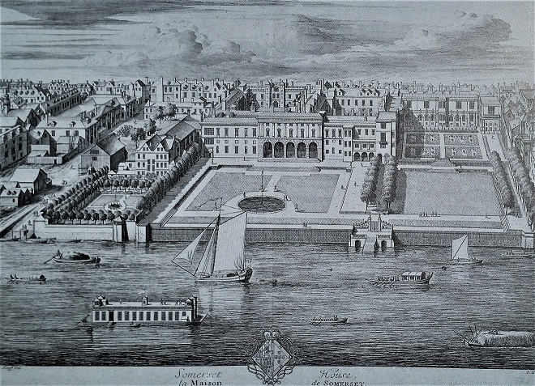
L’Angleterre est malheureuse parce qu’elle a rompu les continuités : continuité ecclésiale d’abord, bientôt continuité monarchique. Le schisme d’Henri VIII et la révolution de 1640 ne sont certes pas directement superposables, mais Bossuet travaille à les inscrire dans une même histoire de l’innovation devenue principe d’instabilité. Quand on a appris qu’une autorité ancienne peut être renversée, on en renverse d’autres ; lorsque « les terres sont trop remuées » (p. 126), dira-t-il plus loin, elles finissent par découvrir des précipices. À l’opposé, Henriette-Marie unit deux fidélités : fidélité au sang reçu et fidélité à la foi reçue.
La poétique des « extrémités »
L’éloge de la première partie constitue une étape dans le mouvement d’oscillation que constitue l’existence de la reine. Plus Henriette-Marie est élevée, par la noblesse de sa naissance et celle de son action, plus sa chute sera propre à instruire. La logique des « extrémités des choses humaines » annoncée dans l’exorde (p. 122) devient la loi poétique du discours tout entier. Bossuet ne cesse de construire des couples : couronne et exil, autorité et impuissance, palais et pauvreté, mer soumise et mer menaçante, reine et fugitive, trône renversé et trône restauré. Ces contrastes et ces alternances commandent la composition et servent à montrer la toute-puissance de la Providence : le Ciel apparait comme metteur en scène souverain d’une dramatique divine capable de coups de théâtre, de péripéties et de renversements inattendus, dignes d’être contemplés et capable d’édifier
L’itinéraire tragique, du bonheur vers le malheur, s’opère très tôt. Au milieu de l’éloge initial surgit déjà une ombre, celle d’Henri VIII donné comme la source lointaine du désordre : l’Acte de suprématie (1534), apparaît comme le péché originel du royaume d’Angleterre. L’histoire confessionnelle se métamorphose alors en paysage cosmique : « Quand Dieu laisse sortir du puits de l’abîme la fumée qui obscurcit le soleil […] c’est-à-dire l’erreur et l’hérésie […] » (p. 119). L’image apocalyptique du soleil offusqué déplace le discours de la biographie vers l’eschatologie. L’hérésie n’est pas décrite comme simple divergence doctrinale ; elle devient « fumée », obscurcissement, perturbation du régime de visibilité, œuvre des ténèbres (« abîmùe »). L’opposition « fumée / lumière » accompagne une constante de l’oraison : faire voir l’évidence de la vérité, et les donner à lire. L’erreur relève par conséquent d’un aveuglement et d’un défaut de vision. Anne Régent-Susini a montré, dans la première partie de sa thèse, l’importance de ce paradigme lumineux dans la conception bossuétiste de la vérité : le discours tend à se présenter moins comme production argumentative d’une conviction que comme exposition d’une évidence qu’il suffirait de regarder sans obstacle. L’Oraison d’Henriette-Marie met en œuvre ce système de façon particulièrement ambitieuse : ce sont non seulement les vérités doctrinales, mais l’histoire elle-même qui se trouve placée sous le régime de l’évidence.
Cette prétention à l’évidence se heurte toutefois avec l’expression de réserves. Bossuet fait preuve de prudence : « si mon jugement ne me trompe pas » ; il refuse aussi de fixer le « terme fatal » des hérésies (p. 119). L’assurance de l’herméneute capable de donner à lire les desseins de Dieu dans l’histoire se heurte à quelques scrupules, liés directement à un grand principe du Nouveau Testament : les desseins de Dieu sont impénétrables 9 . Nous y reviendrons. La voix du prophète éclairée est parasitée par celle de l’humain qui ne peut voir le plan général, et incline le prédicateur à la modestie. Stylistiquement, ces ambiguités débouchent sur un discours qui n’est pas aussi homogène qu’on pourrait le croire. Les grandes périodes sont traversées de moments réflexifs : « Mais où m’emporte mon zèle ? », « J’avoue qu’en commençant… » (p. 121), « Mais j’interromps l’ordre de mon histoire » (p. 135). La composition se montre en train de se faire, de se défaire, de se chercher, bien loin de la sage binarité annoncée dans l’exorde. La prétendue digression révèle pourtant la véritable nature de la mémoire produite. Henriette-Marie n’est pas seulement louée pour ce qu’elle fut : sa vie légitime une relation franco-anglaise qui se poursuit sous les yeux de l’assemblée. La bifurcation révèle la fonction diplomatique du discours
Mais il reste à expliquer pourquoi une reine aussi prudente, aussi charitable, aussi courageuse et une monarchie présentée comme légitime ont pu être vaincues. L’éloge a produit sa propre aporie. Plus Bossuet grandit Henriette-Marie, moins son échec peut être imputé à sa faiblesse. Plus il disculpe Charles Ier, plus la révolution demande une autre explication. C’est précisément à cet endroit que l’oraison change de régime : elle devient enquête sur les causes.
II. Causes divines, causes humaines
Chez Bossuet, Dieu demeure la cause première de l’histoire : rien n’échappe à sa Providence. Mais cette causalité supérieure n’abolit nullement les causes secondes (décisions des princes, passions, intérêts, rapports de force, hasards apparents) qui produisent réellement les événements selon leur logique propre. L’histoire peut donc se lire à deux niveaux à la fois : dans l’enchaînement intelligible des causes humaines, et, au-dessus d’elles, dans l’ordre providentiel qui leur donne leur ultime signification.
« Je ne suis pas ici un historien… » : histoire et éloge
« Ce n’est pas un ouvrage humain que je médite. Je ne suis pas ici un historien qui doit vous développer le secret des cabinets, ni l’ordre des batailles, ni les intérêts des parties : il faut que je m’élève au-dessus de l’homme, pour faire trembler toute créature sous les jugements de Dieu » (p. 122).
Bossuet affirme hautement qu’il refuse au statut d’historien, tout en prétendant être néanmoins attaché à la vérité.
• La vérité historique est foncièrement contradictoire est surtout neutre. On connait la formule célèbre de Fénelon : « Le bon historien n’est d’aucun temps ni d’aucun pays » 10 ; c’est-à-dire que l’historien est indépendant, vise l’objectivité et se garde de se laisser envahir par des jugements partiaux et excessifs.
• L’éloge vise aussi la vérité, mais il sélectionne délibérément les faits susceptibles de faire apparaître une vertu transmissible. Emmanuel Bury, dans le volume collectif consacré à Bossuet, a bien montré combien panégyriques et oraisons travaillent une biographie déjà orientée vers l’exemplarité. Il serait facile, vain et injuste de reprocher à Bossuet une vision biaisée et partisane de la Révolution anglaise : ce n’est pas à une vérité historique que prétend Bossuet. Ce qu’il cherche à faire, c’est transofrmer une matière historiquement fortement conflictuelle en matière de louange.
Du schisme à la rébellion : généalogie du chaos
La formule « Je ne suis pas ici un historien » n’oppose pas simplement histoire humaine et Providence divine. Bossuet va longuement examiner les événements qui ont marqué l’Angleterre. Ce qu’il récuse, ce sont « le secret des cabinets », « l’ordre des batailles » et « les intérêts des parties ». C’est-à-dire qu’il refuse d’entrer dans le détail de l’histoire secrète et des motifs passionnels, et surtout il refuse de cantonner à ces motivations strictement humaines l’horizon ultime d’intelligibilité de l’histoire. Le prédicateur veut détecter dans le cours de choses leur sens, sous le regard de Dieu.
— Henri VIII,«uxorious king »et tragédie royale
Henri VIII, à qui le Pape refusait le divorce et qui souhaitait épouser Ann Boleyne, a décidé de se proclamer chef de l’Eglise d’Angleterre et de se séparer de Rome en 1534. Dans la lecture catholique traditionnelle du schisme, ce sont la passion amoureuse d’Henri, le désir de rompre son mariage avec Catherine d’Aragon et la question de la succession qui provoquent la rupture avec Rome. Bossuet condense toutes ces raisons présumées dans le mot « passions ». L’immense événement institutionnel qu’est la Réforme anglaise se trouve ainsi enraciné dans le désordre intérieur d’un homme.
Bossuet, qui lit l’Histoire à la lumière de figures bibliques, reconnaît dans Henri VIII un nouveau « Salomon » : Henri « s’égara dans les passions qui ont perdu Salomon et tant d’autres rois » (p. 119). Salomon était un grand roi, excellent à bien des égards (c’est un « prince en tout le reste accompli », p. 119), mais il laissa la passion troubler son jugement ; son amour pour une femme, faute privée, se transformer en catastrophe publique et religieuse. 11 . Dans 1 Rois 11, le roi auquel Dieu a accordé une sagesse incomparable se laisse détourner dans sa vieillesse par ses femmes étrangères : « ses femmes inclinèrent son cœur vers d’autres dieux ». Le paradoxe est précisément celui qui intéresse Bossuet : la sagesse politique la plus haute ne met pas le prince à l’abri de l’asservissement passionnel. Salomon n’est pas un sot devenu idolâtre ; il est le Sage que ses passions rendent infidèle. Henri VIII reçoit donc une figure biblique qui explique comment un prince « accompli » peut produire un désastre dont les conséquences dépassent immensément sa faute personnelle. Erreur de jugement, désordre des passions, disproportion du châtiment : Bossuet nous donne à lire tous les ingrédients d’une vision tragique de l’histoire, tout en restant parfaitement providentielle. Autre caractère éminemment tragique : l’aveuglement. Le roi passionné devient sourd à la parole prophétique et aux bons conseillers, « les sages ». En rapprochant Bossuet de Salomon, uxorious king, Bossuet retourne contre Henri une accusation lancées par Milton et les pamphlétaires contre Charles Ier, lorsqu’ils lui reprochaient d’être gouverné par Henriette-Marie.
D’un point de vue ecclésiologique, la thèse selon laquelle la monarchie anglaise a eu tort de s’être emparé de l’autorité spirituelle (« Ces deux puissances d’un ordre si différent ne s’unissent pas, mais s’embarrassent mutuellement, quand on les confond ensemble », p. 127) corrige une vision grossière de Bossuet comme théoricien d’une absorption pure et simple de l’Église par le prince. Le problème anglais est précisément que la royauté a voulu devenir autorité ecclésiastique. Deux pouvoirs doivent être articulés, non confondus. L’attitude d’Henriette-Marie (« quand cette pieuse Princesse servait l’Église, elle croyait servir l’État », p. 128) constitue l’une des opérations les plus importantes de l’oraison : un élément historiquement controversé (la visibilité et l’influence du catholicisme d’Henriette-Marie) est requalifié en remède à la crise.
Cette généalogie de la grande Révolution d’Angleterre reste évidemment contestable au regard de l’historiographie moderne. Les études contemporaines ne réduisent pas les guerres civiles à la Réforme : elles mobilisent la monarchie composite des trois royaumes, les problèmes fiscaux, les rapports du roi et du Parlement, les crises écossaises et irlandaises, les choix politiques de Charles Ier, l’évolution des mobilisations et la dynamique propre de la guerre. Mais ce décalage ne doit pas conduire à interrompre l’analyse littéraire par un verdict d’historien. Il permet au contraire de saisir le travail du texte : Bossuet sélectionne dans la pluralité des causalités celles qui peuvent être ordonnées à une vision de l’Histoire. Le providentialisme produit un ordre sans avoir besoin de rendre chaque événement miraculeux ou surnaturel. Il hiérarchise les causes : passions des princes, intérêts, institutions, sectes, armées agissent réellement, de leur propre volonté libre ; mais leur puissance et leur sens final sont inscrits dans un ordre plus vaste qui est prévu et régi par une volonté supérieure.
— Charles Ieret les crimes de ses pères
Bossuet innocente presque entièrement Charles Ier au moment même où il interprète sa catastrophe comme un châtiment providentiel. Il faut donc que la faute soit ailleurs, en amont de lui, dans une histoire dont il hérite. Charles est d’abord soustrait au schéma ordinaire de la chute des monarchies. Les révolutions, explique Bossuet, viennent généralement de la « mollesse » ou de la « violence des princes ». Or Charles n’est ni l’un ni l’autre : il est « juste, modéré, magnanime, très-instruit de ses affaires et des moyens de régner » (p. 122) ; son seul défaut serait la clémence, « l’illustre défaut » d’un César (p. 123).
La solution est généalogique et historique. Il faut « remonter jusqu’au principe » (p. 125). La faute décisive n’est pas commise par Charles, mais par les souverains anglais qui ont rendu la religion disponible à la volonté royale, depuis Henri VIII. Plus loin, Bossuet formule brutalement la transmission de cette responsabilité : « les rois en ont souffert, mais aussi les rois en ont été cause » (p. 126). Charles reçoit donc, au XVIIe siècle, les conséquences d’une rupture inaugurée au XVIe siècle.
Une fois de plus, Bossuet marche sur un chemin de crête d’origine biblique. D’un côté, d’après Exode 20, 5 et Deutéronome 5, 9, Dieu « visite l’iniquité des pères sur les enfants » jusqu’aux générations suivantes. C’est-à-dire qu’une faute peut produire des conséquences historiques qui excèdent largement celui qui l’a commise. La causalité morale se prolonge en causalité historique. Ce qui ne signifie pas que Bossuet imputait juridiquement à Charles la culpabilité personnelle d’Henri VIII. L’Écriture elle-même connaît la correction apportée par Ézéchiel 18 (« le fils ne portera pas l’iniquité du père ») et par Dt 24, 16 : chacun répond de son propre péché. La distinction permet justement de comprendre le providentialisme de Bossuet : la culpabilité personnelle n’est pas héréditaire ; les conséquences temporelles du péché, elles, le sont. Charles n’est pas coupable du schisme d’Henri VIII, mais il règne dans un monde que ce schisme a rendu possible. Il reçoit une institution ecclésiale fragilisée, une autorité désacralisée, le précédent de la mutation religieuse imposée par le souverain ; puis ce principe d’innovation se retourne contre la souveraineté elle-même. « Les rois en ont souffert » : Charles est bien plus victime que coupable, victime exemplaire d’une histoire plus ancienne que lui.
La philosophie de l’histoire de Bossuet, apparaît encore une fois providentielle et pleinement tragique : les innocents (relatifs) peuvent habiter une histoire dont le cours a été dénaturé par les fautes des morts. Charles est juste, mais sa justice ne suffit pas à rendre juste le monde dont il hérite.
– « Mille sectes bizarres » (p. 119)
Lorsqu’il décrit la mulciplication des sectes, Bossuet s’appuie sur une réalité historique qui fut très frappante. Dès le début de la Révolution, l’effondrement de l’épiscopat à l’échelle nationale, la liberté religieuse et les principes fondamentaux du protestantisme (en particulier un rapport direct et personnel à l’Ecriture sainte, « sola scriptura ») provoquèrent l’apparition d’églises autonomes, de sensibilité, taille et systèmes d’organisation très divers. Les Presbytériens constituèrent une tendance très représentée au Parlement, favorable à une monarchie contrôlée et à une Eglise nationale sans épiscopat. Mais des « sectes » plus petites se formèrent également, jusqu’à des groupuscules pittoresques, dont l’influence réelle fut inversement proportionnelle à la réputation sulfureuse que leur fit la presse à scandale ; dans l’armée, se développèrent les « Indépendants » calvinistes radicaux qui menèrent les troupes parlementaires à la victoire et jouèrent un rôle essentiel dans la naissance de la République.

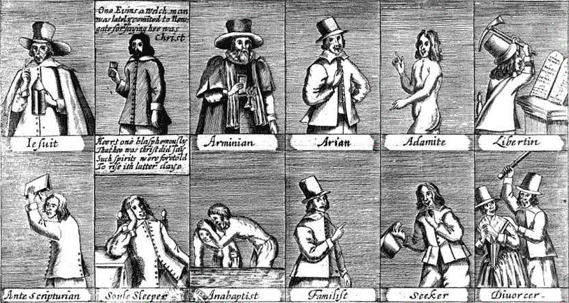
Bossuet réorganise cette efflorescence selon une généalogie polémique simple. Lorsqu’il met en place une logique du pire, des luthériens aux calvinistes, puis aux sociniens, puis aux anabaptistes, puis aux indépendants, enfin aux « Trembleurs » et aux « Chercheurs » (p. 126), il transforme la pluralisation religieuse des années 1640-1650 en pente continue de l’innovation et de la décadence : « les esprits une fois émus, tombant de ruines en ruines ». Or les historiens décrivent plutôt un milieu extraordinairement mobile, fait de groupes simultanés, de réseaux, de passages individuels d’une communauté à l’autre, favorisé par la guerre civile, l’effondrement de l’ancien encadrement ecclésiastique, les controverses sur la tolérance et l’explosion de l’imprimé. David Como montre ainsi qu’à partir de 1644 se diffusent à la fois des arguments nouveaux en faveur de la tolérance et des critiques toujours plus radicales des « formes » ecclésiastiques existantes ; Claire Gheeraert-Graffeuille et Ann Hughes ont montré combien cette prolifération confessionnelle et la réaction qu’elle suscite sont inséparables de la culture imprimée de la Révolution liée à la disparition de la censure en 1642.
Un mot peut-être de la plus célèbre de ces sectes : les « Trembleurs » sont les « Quakers », c’est-à-dire les premiers « Friends ». Le mouvement se cristallise véritablement au début des années 1650, particulièrement en 1651-1652 autour de George Fox dans le nord de l’Angleterre ; James Nayler et Margaret Fell comptent parmi ses premières grandes figures. Les premiers Quakers insistent sur l’accès immédiat à Dieu par la « Light of Christ », récusent la nécessité d’un clergé institué et de formes liturgiques fixes, reconnaissent la prédication féminine et organisent des réunions où peuvent se produire des manifestations physiques d’émotion religieuse, notamment des tremblements. Le sobriquet Quaker est traditionnellement rattaché à l’épisode de 1650 où, selon le propre récit de Fox, le juge Gervase Bennet lui aurait appliqué ce nom après qu’il eut demandé à ses interlocuteurs de « trembler à la parole du Seigneur » ; le terme correspondait en tout cas à des manifestations corporelles effectivement associées aux premiers Friends.

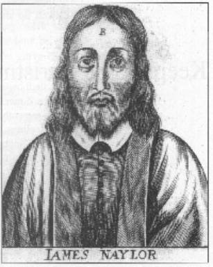
Les Quakers deviendront célèbres plus tard, lorsque William Penn ira, en 1682, fonder la Pennsylvanie, « l’Etat quaker ».
Bossuet sait donc assez bien ce qu’il désigne lorsqu’il parle des « Trembleurs », mais sa formule (« gens fanatiques, qui croient que toutes leurs rêveries leur sont inspirées ») est violemment polémique. Elle traduit dans le langage catholique de l’enthousiasme ce que les Quakers conçoivent comme illumination intérieure. Pour Bossuet, dès lors qu’une autorité extérieure (Église, tradition, ministère) ne règle plus l’interprétation, l’individu risque de baptiser « inspiration » ce qui n’est que production de son imagination. C’est exactement la démonstration qu’il mène depuis le « chacun s’est fait à soi-même un tribunal » : les Quakers lui servent de cas extrême du passage de l’Écriture interprétée individuellement à la révélation intérieure immédiatement revendiquée.
Les « Chercheurs », ou Seekers, sont plus difficiles à définir. Alec Ryrie a récemment insisté sur le fait qu’ils ne constituent probablement pas des « sectes » bien organisées comparables aux Baptistes ou aux Quakers. Le terme prend un sens sectaire vers le milieu des années 1640 et est attesté en 1646 jusque dans le Lancashire. Il recouvre plusieurs positions, dont le noyau commun est une profonde incertitude ecclésiologique : certains ne savent plus où se trouve la véritable Église ; d’autres pensent qu’aucune véritable Église ni aucun véritable ministère ne subsiste depuis l’âge apostolique. Certains en viennent donc à suspendre baptême, sacrements, ministère et autres « ordinances », dans l’attente d’une restauration authentiquement apostolique et d’une nouvelle manifestation de la puissance divine. John Saltmarsh décrit en 1647 des personnes qui refusent de prêcher, baptiser ou constituer une communion ecclésiale parce qu’elles attendent, comme les apôtres, d’être « revêtues de la puissance d’en haut ». D’autres groupes se réunissent pour lire l’Écriture, discuter ou attendre silencieusement une manifestation nouvelle.
Tel est le sens précis de la plaisanterie de Bossuet : les Chercheurs seraient ainsi nommés parce que, « dix-sept cents ans après Jésus-Christ, ils cherchent encore la religion et n’en ont point d’arrêtée ». Il touche bien un trait rée (la suspension du consentement aux Églises existantes) mais le caricature en indécision perpétuelle. Ce qui frappe, c’est la très bonne connaissance par Bossuet de ce contexte religieux britannique hétéroclite des années 1640-1650.
Ces sectes ont nourri beaucoup de fantasmes dans les « pamphlets » diffusé par le colportage dans toute l’Angleterre, fantasmes alimentés par des comportements qui pouvaient paraître effectivement déviants (des « pettycoat-preachers », femmes prédicatrices « en jupon », aux évangélistes nus).

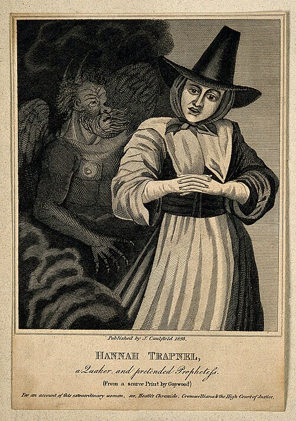
Les sectes religieuses de la Révolution anglaise ont constitué et constituent encore une matière passionnante pour les romanciets autant que pour les chercherurs. Elles suscitèrent chez les historiens de vives polémiques qui ne sont toujours pas éteintes. Bossuet joue sa partie dans cette historiographie contestée. Le phénomène qu’il décrit existe bel et bien, et les contemporains en ont été stupéfaits et effrayés ; Gangraena de Thomas Edwards, publié en 1646, qui dresse la liste de ce qu’il tient pour des déviances fanatiques, en constitue le monument polémique. Mais Bossuet transforme cette pluralité historique en une généalogie orientée : chaque rupture d’autorité engendre une rupture plus radicale, jusqu’au moment où l’Église visible disparaît chez les Seekers et où l’autorité se replie dans l’inspiration intérieure chez les Quakers. La menace sous-jacente à quoi mène cette désagrégation progressive, c’est l’antinomianisme c’est-à-dire, au sens large, l’idée que le chrétien véritable, justifié par la foi et conduit par la grâce, n’est plus tenu de respecter une « loi morale » qui lui serait dictée par une norme extérieure. D’où la crainte : si le salut dépend entièrement de la grâce, les « élus » ne risquent-ils pas de se croire affranchis de toute autorité ? Pour Bossuet, l’antinomianisme, l’immoralisme et le chaos sont les aboutissements logiques, historiquement très discutables, mais rhétoriquement redoutables, du péché originel de Henri VIII : une désobéissance à l’Eglise de Rome. C’est la même crainte de l’antinomianisme qui poussera plus tard Bossuet à combattre Madame Guyon et Fénelon, suspectés aussi de vouloir court-circuiter les médiations humaines et atteindre directement l’illumination divine.

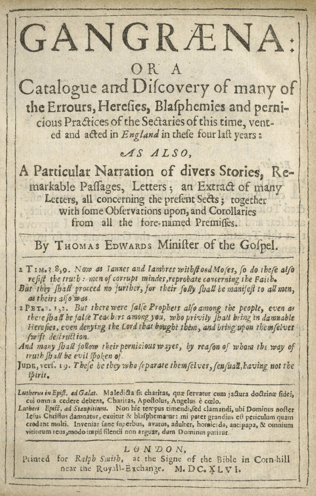
« L’instrument de ses desseins » (p. 130) : Cromwell, fléau de Dieu
Le portrait de Cromwell constitue l’un des sommets littéraires de l’oraison. Notons rapidement que le vocabulaire rattache directement Cromwell à Machiavel : « il ne laissait rien à la fortune de ce qu’il pouvait lui ôter par conseil et par prévoyance ». Or, Machiavel était considéré comme une figure diabolique, lorsqu’il affirmait qu’il dépendait de la volonté humaine et d’un art de régner la capacité à prendre et conserver le pouvoir 12 . Cette phrase est capitale parce qu’elle interdit de faire du providentialisme une négation de l’intelligence humaine. Cromwell prévoit, calcule, agit, utilise les occasions chère au théoricien politique florentin. Il appartient à cette race « d’esprits remuants et audacieux, qui semblent être nés pour changer le monde ». Le verbe « changer » fait de lui le pendant individuel et politique de l’innovation religieuse sectaire : il concentre en une volonté unique ce que le schisme avait dispersé : du « mélange infini de sectes », il fabriqua « un corps redoutable de cet assemblage monstrueux ». L’oxymore logique est frappant : une multiplicité désunie devient corps ; Cromwell crée un monstre politique de sa capacité à organiser ce qui semblait inorganisable - image qui, au passage, n’est pas sans faire songer au Leviathan de Hobbes.

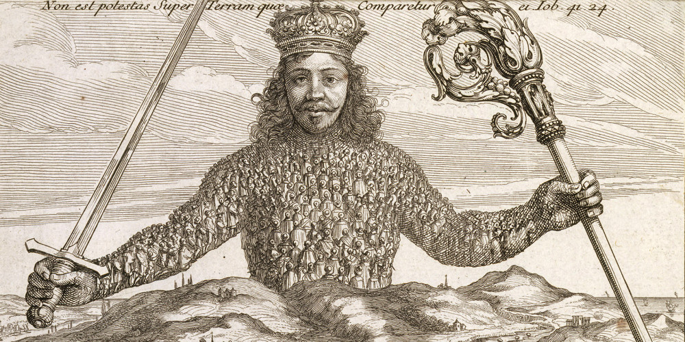
Le terme de « liberté », apparu dans l’exorde, revient comme instrument de gouvernement. Cromwell sait « prendre la multitude par l’appât de la liberté ». La métaphore cynégétique transforme la valeur revendiquée par les adversaires en piège : la liberté n’est pas ici fin politique, mais leurre utilisé par le « subtil conducteur ». Le portrait culmine dans la polymorphie : « docteur et prophète […] soldat et capitaine ». Le rythme binaire fait de Cromwell un usurpateur de fonctions. La même personne parle religion, conduit les armées, interprète Dieu et exerce la puissance temporelle. Il est ainsi le négatif structurel de l’ordre bossuétiste quidistinguesoigneusement ces fonctions. Et il est, paradoxalement, le successeur monstrueux et dégénéré d’Henri VIII, qui le premier avait entrepris de mêler l’Eglise et l’Etat.
Si Henri VIII est Salomon, si Henriette-Marie est Esther, Cromwell l’usurpateur est Nabuchodonosor, que Jérémie appelle « mon serviteur » parce que Dieu l’utilise pour exécuter ses décrets (p. 130). La comparaison n’ennoblit nullement Cromwell au sens moral. Elle dissocie radicalement deux valeurs que l’éloge associe habituellement : efficacitéetmérite. Un homme peut accomplir de grandes choses sans être bon ; plus encore, son efficacité peut servir un ordre qu’il ne connaît pas. Bossuet refuse alors de s’attarder sur « ces fameuses victoires dont la vertu était indignée ». La formule elle-même contient l’antinomie : les victoires sont « fameuses », donc glorieuses au regard du monde ; la « vertu » les refuse. Le discours abandonne le récit militaire au moment où il risquerait de produire une fascination héroïque autonome (De fait, Cromwell a effectivement accumulé les victoires, la plus fameuse étant celle de Naseby en 1645.)
13 .
Cette distinction prépare le retour à Henriette-Marie, dont Bossuet offre un portrait symétrique : comme Cromwell, elle est douée d’une grande intelligence politique et d’une grande capacité d’action, mais contrairement à lui, elle possède une grande valeur morale, et contrairement à lui, elle ne remporte pourtant aucun succès décisif. Cromwell réussit sans mérite ; Henriette mérite sans réussir. Bossuet nous persuade de ne pas crier à l’injustice. Dieu a un plan, et il sait reconnaître entre le vice et la vertu sans juger sur les apparences. La vision providentialiste de Bossuet n’implique pas que l’histoire doive toujours être écrite par les vainqueurs : il est des défaites qui, aux yeux du Très-Haut, valent bien plus que les victoires.
« Elle marche comme un général » : la reine héroïne
Après la longue généalogie de la révolution et le portrait de Cromwell, Bossuet effectue un retour au sujet principal de son oraison : « il est beau de considérer ce que la grande Henriette a entrepris […] » (REF). Le changement de régime est spectaculaire. Nous quittons l’histoire doctrinale et les grandes causalités pour entrer dans une narration d’action.
—«il est beau de considérer ce que la grande Henriette a entrepris » (p. 130) : Une héroïne de roman
Les pages 130-134 constituent sans doute la section la plus romanesque de l’oraison : négociations, traversées, tempêtes, canonnades, joyaux engagés, armées, sièges, naissance dans une ville menacée, fuite sur l’Océan : nous évoluons dans un univers qui n’est pas étranger aux lectrices de l’Artamène de Scudéry, et le récit affiche d’emblée son ambition esthétique (« il est beau »). Bossuet accumule les verbes dont Henriette-Marie est sujet. Il rappelle « ses voyages, ses négociations, ses traités » (p. 130). Elle rallie des rebelles, persuade, obtient des appuis ; elle engage ses pierreries (« ses joyaux ») pour procurer armes et munitions (p. 131). Sa magnificence d’autrefois, lorsqu’elle « perdait ce qu’elle ne donnait pas », trouve ici sa version tragique : les joyaux royaux cessent d’être ornements pour devenir matériel de guerre. La grandeur se dépouille elle-même afin de sauver le trône. Son courage l’égale aux grands capitaines, sans nuire aux qualités de son sexe. Le rythme (elle « marche », « assiège », « triomphe » et « pardonne », p. 133-134) construit une miniature épique : avancée inexorable, victoire et clémence. Le portrait de la reine consort rejoint pour un instant le lexique que l’on attendrait de Condé, mais Henriette-Marie n’est pas seulement un personnage sorti d’un roman d’aventures précieux : elle est aussi un modèle pour instruire les rois, un miroir des princes. On la voit en effet surmonter sa peur, s’élever « au-dessus de la vengeance aussi bien que de la crainte » (p. 133). Elle fait preuve de clémence, l’une des grandes vertus royales avec l’humilité, la justice, la piété, la « prudence » ou encore la tempérance.
La traversée maritime, topos du roman baroque, donne lieu à une hypotypose. Pendant dix jours, la tempête menace le navire ; les marins perdent courage ; la reine demeure « toujours intrépide » (p. 132). La tradition héroïque affleure jusque dans le mot plaisant qu’on lui prête : « les reines ne se noyaient pas ». L’énoncé est presque désinvolte ; il introduit dans la pompe funèbre une pointe de présence personnelle, une voix vive de la défunte, au moment même où il évoque une des rares interventions divines directement perceptibles (« une délivrance si miraculeuse », p. 132).
Mais Bossuet intervient aussitôt comme narrateur omniscient, adoptant le point de vue de Dieu : Henriette est « réservée à quelque chose de bien plus extraordinaire » (p. 132). L’épisode historique est un signe, indice d’un avenir que la reine ignore encore. Dans la voix prophétique du prédicateur, la Providence prend donc également la forme stylistique d’une prolepse narrative : le narrateur sacré connaît le destin vers lequel l’héroïne avance.
On l’a dit en préambule : la recherche historique confirme que cette agentivité ne relève pas d’une pure invention encomiastique : pendant la guerre civile, Henriette-Marie procura des fonds et des armes, entretint des réseaux diplomatiques, rejoignit les forces royalistes et participa activement à la mobilisation de la cause de Charles. En revanche, il faut se garder de transformer ces épisodes en commandement militaire autonome au sens moderne : son pouvoir reste consortial, dynastique et exceptionnellement élargi par la crise, selon les modalités expliquées par Claire Gheeraert-Graffeuille dans La Cuisine et le forum (op. cit.) . C’est précisément la gradation que les travaux récents permettent de restituer. (routledge.com).
— Une femme forte
Surtout, ce qui nous intéresse, plus que la vérité historique du portrait, c’est que Bossuet dépeint Henriette-Marie sous les traits d’un type féminin très répandu à l’époque, celui de la femme forte. L’expression elle-même plonge dans la Vulgate (« Mulierem fortem quis inveniet ? », Proverbes 31,10) : la « femme forte » y est celle qui joint énergie, sagesse, fidélité conjugale, souci de sa maison, charité et crainte de Dieu. Au XVIIe siècle, ce modèle domestique et moral s’élargit volontiers jusqu’à l’héroïsme politique et guerrier, comme l’atteste la célèbre Gallerie des femmes fortes du jésuite Pierre Le Moyne, publiée en 1647 et dédiée à Anne d’Autriche. Le livre rassemble vingt héroïnes réparties en quatre séries (Juives, Barbares, Romaines et Chrétiennes), de Déborah, Jahel et Judith jusqu’à Isabelle de Castille, Jeanne d’Arc et Marie Stuart. Il ne s’agit pas simplement de curiosités historiques : chaque vie devient un exemplum, destiné à montrer que les vertus héroïques ne sont pas l’apanage masculin.

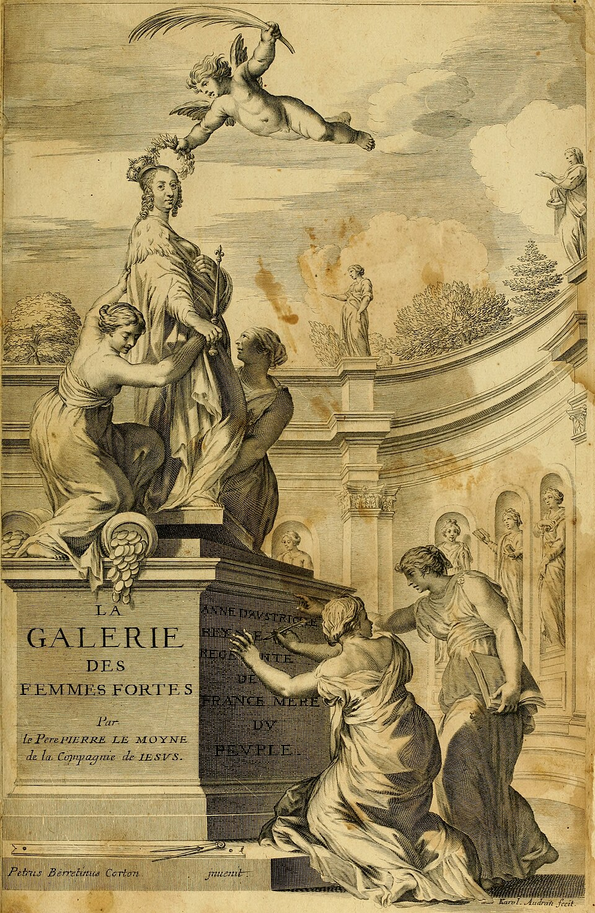
Or le portrait d’Henriette-Marie par Bossuet mobilise très exactement ce vocabulaire de la fortitudo. Il la dit « ferme et vigoureuse » (p. 115), loue sa « prudence », sa « magnanimité » (p. 115), affirme que ni les malheurs prévus ni ceux qui la surprennent « n’ont abattu son courage » (ibid.). Mais Bossuet ne transforme pas Henriette en homme de guerre. Sa force doit être réordonnée par les devoirs de son sexe, de son état et surtout par la religion. Le Moyne lui-même prend soin de christianiser les modèles antiques : la constance, la fidélité et la pudeur peuvent être conservées, mais non le suicide héroïque d’une Panthée ou d’une Porcie. Chez Bossuet, pareillement, la vigueur politique d’Henriette est inséparable de sa fidélité d’épouse, de mère et de catholique. C’est peut-être cela qui caractérise le mieux sa « force » : elle ne cesse pas d’être femme pour devenir héroïne.
Le portrait bossuétiste fait ainsi converger deux traditions de la « mulier fortis » : celle de Proverbes 31, femme de fidélité, de sagesse et de charité, et celle des héroïnes bibliques (Déborah, Judith, Esther) qui, lorsque le peuple de Dieu est menacé, sortent de la sphère ordinaire pour devenir agents de son salut dans l’histoire. C’est exactement le territoire imaginaire qu’avait magnifiquement balisé Le Moyne vingt ans plus tôt.
— « Au temps des persécutions » : souveraine et martyre
Bossuet dramatise fortement la situation des catholiques anglais. « Mais si jamais l’on peut dire que la voie du chrétien est étroite, c’est […] durant les persécutions. » (p. 117) Les catholiques ne sont plus une minorité confessionnelle suspectée de fidélités concurrentes, mais « les enfants de Dieu », victimes d’une violence qui les contraint au secret et à la clandestinit. L’Eglise catholique anglaise, chez Bossuet, tient de celle des catacombes : plus d’« autel », plus de « sanctuaire », plus de confession publique ; il faut « cacher la pénitence avec le même soin qu’on eût fait les crimes » (p. 118). Nouvelle pointe : ce n’est plus le péché qui se cache, mais le remède au péché. Et Bossuet pousse l’inversion jusqu’à l’Eucharistie : le Christ lui-même doit chercher « d’autres voiles et d’autres ténèbres » que ceux sous lesquels il se cache sacramentellement. La clandestinité historique vient ainsi redoubler le mystère eucharistique. Bossuet applique au clergé britannique Hébreux 11, 38 : « desquels aussi le monde n’était pas digne », c’est-à-dire qu’il les inscrit dans la série biblique des justes persécutés. C’est bien un imaginaire du martyre qui sous-tend le texte, même en l’absence de supplice sanglant.
Plus tard, lorsque la reine elle-même connaîtra l’exil, la pauvreté, le danger et la perte de son époux, cette première coloration religieuse permettra de relire les souffrances politiques comme une sorte de Passion continuée : elle n’est pas martyre au sens canonique (elle ne meurt pas pour la foi) mais sa biographie reçoit progressivement une forme martyriale, faite de fidélité, de persécution, de dépouillement et de constance.
C’est ce qui rend ce passage particulièrement important dans la composition : avant de faire d’Henriette-Marie une « reine malheureuse », Bossuet l’a installée du côté de l’Église persécutée. Ses futurs malheurs ne pourront donc plus apparaître comme la sanction d’une « papiste » qui aurait troublé l’Angleterre, selon la légende noire parlementaire britannique ; ils pourront être interprétés comme les épreuves d’une chrétienne fidèle.
« S’il ne s’y était mêlé d’autres causes » : bruit, fureur et Providence
L’Oraison funèbre d’Henriette-Marie repose sur une conception de l’histoire qui interdit de choisir simplement entre explication humaine et explication providentielle. L’histoire récente de l’Angleterre illustre à quel point les deux cités, celle de Dieu et sont mêlées jusqu’à la fin des temps, pour Bossuet comme pour Augustin (Cité de Dieu, XIV, 28).
— Fortune ou Providence ?
Henriette-Marie, à en croire Bossuet, a réussi à tirer le meilleur parti des deux états où la « fortune » l’avait mise.
La « bonne et la mauvaise fortune » font songer au motif médiéval de la rota fortunae, mais ici adaptée au providentialisme de Bossuet. Le relais entre l’Antiquité païenne et le christianisme est fourni par Boèce. Dans la Consolation de Philosophie (livre II) Fortune y revendique précisément le droit de faire tourner sa roue : elle élève ceux qui sont en bas et abaisse ceux qui sont en haut. L’iconographie médiévale développera massivement la rota Fortunae : le roi monte, règne, tombe. Henriette-Marie semble offrir une illustration saisissante de cette structure alternativement ascendante et descendante.

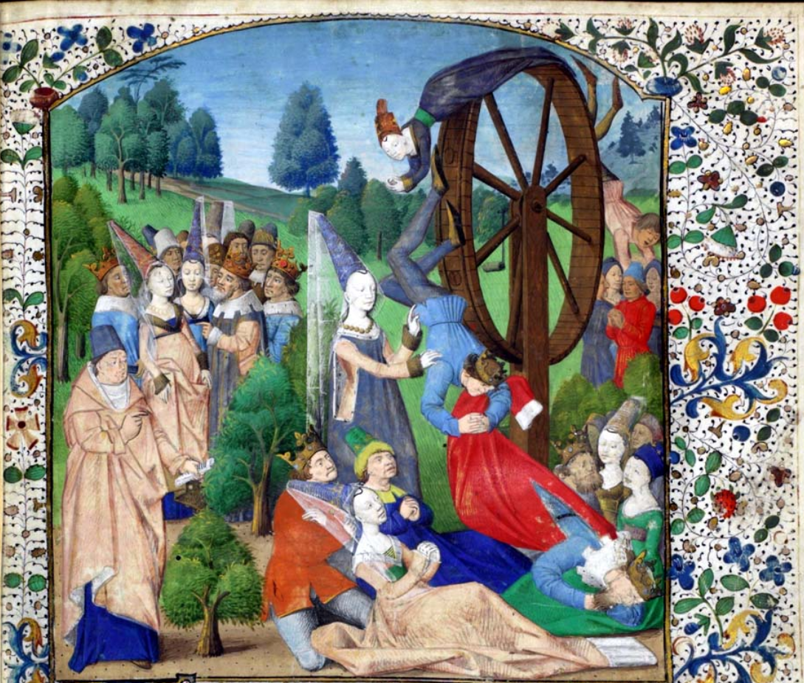
Bossuet, en réalité, ne reprend ce motif médiéval et renaissant que pour ôter à la « Fortune » toute initiative personnelle : cette figure du destin capricieux est en réalité, elle aussi, le docile instrument de la Providence et n’exerce aucune souveraineté : (« soit qu’il élève les trônes, soit qu’il les abaisse […] soit qu’il communique sa puissance aux princes, soit qu’il la retire à lui-même » (p. 111). La « fortune » erratique est le nom que donnent les insensés aux aléas de l’existence ; le Sage, lui, sait que les tribulations en apparence cahotiques de la vie sont guidés par une Providence et que, sous cet aspect, elles deviennent intelligibles. Et pour les assistants à l’oraison funèbre, « la bonne et la mauvaise fortune » ne sont pas deux puissances intcontrôlables qui disposent de la volonté humaine : elles sont deux états d’une pédagogie providentielle. Dieu élève et abaisse les princes à son gré, pour nous instruire de la façon la plus spectaculaire. L’oraison conser le mot païen de « fortune », mais pour l’intégrer à sa propre théologie : la Fortune est le nom donné par les hommes aux causes secondes.
La Providence est en revanche la cause première : rien n’échappe finalement au gouvernement de Dieu. Mais ce gouvernement s’exerce ordinairement à travers des causes secondes, c’est-à-dire des volontés, des passions, des institutions, des décisions politiques, des stratégies militaires, des circonstances. La Providence ne dispense donc pas Bossuet de chercher pourquoi les événements ont eu lieu. Le volume collectif consacré à Bossuet paru aux Presses de la Sorbonne insiste justement sur ce point : Dieu n’agit pas normalement par miracle, les événements s’expliquent par les causes secondes ; les moyens humains ont une véritable efficacité, mais s’enchaînent selon une dépendance mystérieuse aux décrets de la Providence. Chez Bossuet, le bruit, la fureur et les aléas apparents de l’histoire ne signifient pas rien : ils constituent précisément la matière opaque dont la parole du prédicateur entreprend de dégager le sens.
— « L’étincelle » et les « restes »
Quant à l’échec politique d’Henriette-Marie, il est à relativiser et à interpréter au regard des Ectitures. Certes, Dieu a décidé de ne pas se servir de son agentivité débordante (et vertueuse) pour sauver le roi, mais elle n’a pas été inutile. On peut relier son action à cette notion centrale dans la geste du peuple hébreu : celle du « petit reste », en hébreu she’ar / she’erit, puis en latin reliquiae, qui renvoie au nombre des élus préservé, survivant aux temps de troubles, de massacres et de persécutions. La Bible en donne de nombreux exemples, le plus saisissant étant celui de Joas : Athalie croit avoir exterminé toute la descendance royale, mis un enfant échappe au massacre et reste caché six ans dans le Temple après que Josabeth, femme du grand prêtre Joad, l’a sauvé. Ce minuscule survivant porte donc en lui toute la continuité de la maison de David. S’il meurt, la lignée promise s’éteint ; tant qu’il vit, quelque chose subsiste à partir de quoi Dieu peut restaurer le royaume de Juda 14. Le motif du « reste d’Israël » est topique, et on le retrouve encore chez Paul (« de même, dans le temps présent, il y a un reste selon le choix de la grâce », Rm 11,5.). Tel est le paradigme à partir duquel on peut comprendre le rôle d’Henriette-Marie : quand tout semble perdu, Dieu s’est conservé quelques fidèles dont la seule existence empêche que la véritable religion ait entièrement disparu. On ne peut tout citer ici (( Élie croit être demeuré seul fidèle à Dieu : « je suis resté moi seul » ; Dieu lui révèle qu’il s’est réservé sept mille hommes qui n’ont pas fléchi le genou devant Baal, 1 R 19,18. Isaïe en fait même un principe de l’histoire sainte : « un reste reviendra » (she’ar yashub, Is 10,21-22 ; cf. le nom symbolique du fils d’Isaïe en Is 7,3. Et il existe un motif connexe, particulièrement beau pour Joas : celui de la « lampe de David ». Dieu conserve à David une « lampe » à Jérusalem (1 R 11,36 ; 15,4 ; 2 R 8,19) : la dynastie peut être réduite à presque rien, mais la lumière, la lampe de David, ne doit pas s’éteindre. Joas enfant caché est presque littéralement la petite flamme dynastique que Dieu empêche Athalie de souffler )) , mais il faut retenir ceci : catastrophe, invasion, exil : Dieu ne garantit pas la conservation intacte du peuple ; il garantit qu’un reste, une lampe de David, traversera la catastrophe et permettra un recommencement : elle a « conservé les précieux restes de tant de persécutions » (p. 120), elle « conservait » et même « augmentait le peuple de Dieu », surtout elle a « conservé si soigneusement l’étincelle de ce feu divin » (p. 120) ; Bossuet ajoute l’autre métaphore évangélique du « levain précieux » (p. 120, cf. Mt, 13, 33 et Lc, 13, 20-21) qui pourrait un jour sanctifier toute la masse anglaise. Henriette-Marie apparaît comme la gardienne d’un reste à partir duquel Dieu peut recommencer l’histoire.
D’un point de vue littéraire, Bossuet combine donc dans Henriette-Marie quatre métaphores appartenant à cette même structure profonde d’origine biblique :
le reste : « les précieux restes » des catholiques persécutés ;
la captivité de Sion : une Église exilée en sa propre patrie ;
le feu qui couve : « l’étincelle » conservée ;
le levain : une quantité infime appelée à transformer toute la masse.
On retrouve ailleurs le motif, néotestamentaire celui-là du petit nombre fidèle (« Ne craignez pas, petit troupeau », Luc, 12, 32). Dans l’oraison de Marie-Thérèse, il commente les « pauca nomina » de Sardes, « un petit nombre de fidèles » qui n’ont pas souillé leurs vêtements. Henriette-Marie n’a pas reconquis l’Angleterre au catholicisme, mais ses efforts n’ont pas été vains : grâce à elle, quelque chose demeure et résiste à l’adversité. La Providence agit ici non par le triomphe, mais de façon secrète, invisible, par la préservation d’un minimum fécond. La Providence ne garantit pas la victoire des justes, mais bien la survie du petit reste.
La présence de Dieu dans l’histoire n’est pas toujours un fracas. Elle travaille souvent invisiblement, comme le levain — mais pas moins efficacement. Isaïe l’avait écrit, et Pascal s’en était souvenu : « Vere, tu es Deus absconditus » (Is. 45, 15).
—Un providentialisme tragique ?
En général, on oppose
le providentialisme, réputé optimiste, parce qu’il professe que l’histoire est entre les mains de Dieu, et que son gouvernement, s’il est impénétrable, mène au bien
la vision tragique de l’histoire, selon laquelle le cours des choses est régi par une fatalité perverse qui conduit les hommes au malheure (l’histoire d’OEdipe constituant le paradigme du tragique)
La conception de Bossuet ne saurait se résumer à cette conception simplsite, comme le montrent les efforts vains d’Henriette-Marie. Les conseils de la reine étaient bons : il eût fallu marcher sur Londres comme Hannibal devait marche sur Rome. Si ses avis ne furent pas suivis, c’est qu’une fatalité présidait à cet échec (le « terme fatal », p. 134). L’État « tomba en langueur » et la reine dut fuir. L’accouchement sert d’occasion à une nouvelle digression en l’honneur de Henriette-Anne (« Mais j’interromps l’ordre de mon histoire » (p. 135), digression qui manifeste le travail de sélection et de raccord cher à Christine Noille.
Risquera-t-on une formulation oxymorique ? Si j’osais, j’écrirais que l’exil de la reine et l’expression « terme fatal » illustrent le providentialisme tragique de Bossuet : toute l’action humaine a été déployée, et c’est parce qu’Henriette a tout fait que son échec peut se retourner en grandeur et en leçon pour les rois. Si elle était restée passive, fataliste pour ainsi dire, la leçon de sa chute se serait tout entière limitée à constater son incapacité. Au contraire, Henriette a fait son devoir : Dieu ne la juge pas sur son échec, et ne lui reproche pas non plus d’avoir tenté de contrecarrer ses desseins, puisque la victoire de Cromwell était écrite par la Providence. La leçon est autre : un roi, une reine doivent accomplir leur devoir, quoi qu’il leur en coûte, sans calcul, et indépendamment de l’issue de leurs actes, qui est entièrement entre les mains d’un Dieu « inflexible ». Son plan est arrêté, la perte d’Henriette inéluctable, son action thérapeutique rendue impossible (elle aurait pu « guérir les esprits »), le bon roi Charles aurait pu conserver son trône : c’est dans cette contradiction que réside une forme de tragique, mais un tragique seulement apparent, puisque, d’une part, le plan de Dieu embrasse un horizon plus vaste que le simple maintien des Stuarts au pouvoir et que, d’autre part, la Providence retire à la reine certes l’efficacité décisive de son action, mais non la valeur de ses actions. Ses actes deviennent probatoires, et c’est en quoi ils servent de leçon : ils prouvent son courage, sa sagesse et sa foi, et l’oraison funèbre vient révéler ses qualités qui dépassent son succès ou son insuccès historique.
Et c’est pourquoi l’Oraison d’Henriette-Marie est beaucoup plus qu’un récit providentialiste plaqué sur une révolution. Elle met constamment en concurrence l’intelligibilité politique des causes secondes et l’intelligibilité théologique de la cause première. Le formidable intérêt littéraire du texte vient de ce que cette hiérarchie n’est jamais donnée d’avance : elle doit être produite par le récit, les rapprochements, les ruptures d’échelle, les citations bibliques et les commentaires de Bossuet. La Providence est ce que Bossuet croit découvrir dans l’histoire ; elle est aussi ce que son discours travaille à faire voir.
III. « Survivre à ses grandeurs » (p. 136) : de l’héroïsme politique à la « vertu de la Croix » (p. 140)
1660 : une Restauration (encore) incomplète
Les efforts d’Henriette-Marie n’ont servi à rien, mais, quand il lui a plu, « miraculeusement » (p. 112) et pour ainsi dire sans effort, Dieu a rétabli les rois, montrant que sa puissance ne dépendaient pas des hommes : en 1660, Charles II monte enfin sur le trône de son père. Le contraste est total : depuis vingt-cinq pages, les hommes, et Henriette avec elle, s’agitent, et Dieu agit sans peine, montrant ainsi l’étendue de sa puissance.
D’un point de vue historiographique, Bossuet distingue deux Restaurations emboîtées, dont une seule s’est accomplie à l’heure où il parle : la maison des Stuart a retrouvé le trône ; l’Angleterre n’a pas encore retrouvé, selon lui, l’unité catholique. Or, puisque toute son interprétation causale a fait de la rupture avec l’Église la faute originaire, le rétablissement politique ne peut être qu’une guérison incomplète tant que cette rupture demeure. Bossuet formule le principe à la fin de sa longue généalogie des troubles : « puisque la séparation et la révolte contre l’autorité de l’Église a été la source d’où sont dérivés tous les maux, on n’en trouvera jamais les remèdes que par le retour à l’unité et par la soumission ancienne » (p. 128).

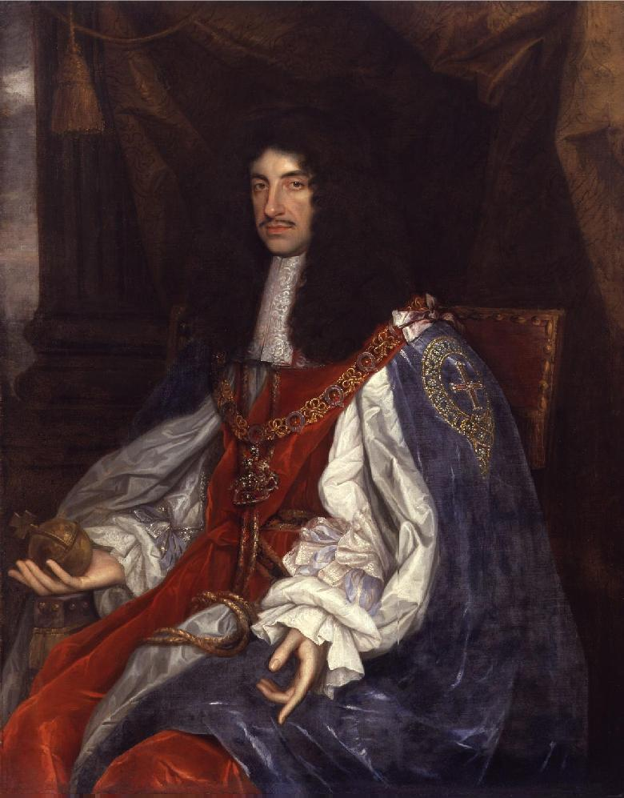
Le rêve de Bossuet n’a rien de délirant. Charles II, frère d’Henriette-Anne et fils d’Henriette-Marie, a toute sa vie été tenté par le catholicisme, auquel il s’est converti sur son lit de mort. En février 1685, il fut reçu dans le sein de l’Eglise romaine par le bénédictin John Huddleston, qui lui donna la confession, l’absolution, la communion et l’extrême-onction. Bossuet poursuivra l’année suivante, dans l’oraison d’Henriette d’Angleterre, son rêve d’une conversion de l’Angleterre, envisageant de « secrets retours », se demandant ce que réserve « l’Eternelle Providence » et qu’il puisse ramener un jour ce royaume à l’unité catholique. Il ne sait évidemment rien de 1685, mais conjecture. Bossuet n’avait pas prophétisé la suite de l’histoire, d’abord parce que Charles II n’est pas l’Angleterre et que sa conversion secrète et terminale ne produit aucune conversion nationale ; ensuite parce que Bossuet envisage plusieurs scénarios possibles et ne formule pas une prédiction précise. Le retour de Charles II dans le giron de Rome était une possibilité vraisemblable, parmi d’autres. Bossuet connaissait Henriette, les inclinations religieuses de la famille Stuart, probablement une partie des espoirs catholiques entourant la cour anglaise ; et le traité secret de Douvres, conclu justement en 1670 et dont nous aurons à reparler, comportait lui-même le fameux engagement de Charles à se déclarer catholique à un moment opportun. Le retour du catholicisme anglais était alors une hypothèse politique réelle, même si elle ne s’est finalement pas accomplie sous la forme espérée. C’est presque un cas d’école pour notre réflexion sur la Providence : Bossuet interprète théologiquement des possibles qui existent aussi réellement dans l’ordre des causes secondes. Le plus ironique est que la suite (1688, la chute de Jacques II, la « Glorieuse Révolution », puis l’installation durable d’une monarchie protestante) aurait dû obliger Bossuet à changer son discours, qu’il publie au sein de son recueil en 1689, mais il ne le fait pas.
« Si les fortunes de la terre étaient quelque chose » (p. 138) : du Louvre au temple écroulé
Bossuet cesse un instant de raconter et expose sa propre opération d’interprétation : « Quand je considère en moi-même […] que puis-je penser autre chose, sinon que la Providence, autant attachée à lui conserver la vie qu’à renverser sa puissance, a voulu qu’elle survécût à ses grandeurs, afin qu’elle pût survivre aux attachements de la terre […] ? » (p. 136). Cette phrase exhibe un saut métaphysique et un changement d’ordre, lorsque la reine revient au Louvre, lieu même où elle est née dans la grandeur, et où elle doit manifester publiquement sa pauvreté, « toute l’étendue de sa misère » (p. 136). La reine manque de soutiens, y compris celui du roi : il est trop jeune, justifie Bossuet dans une envolée contre-factuelle qui nous montre un Louis imaginaire volant au secours des Stuarts. Mais la mutation capitale, la conversion de la reine, est en cours. Les Visitandines entrent directement dans le discours, ou pour mieux dire entrent en scène pour annoncer la péroraison : « saintes filles, ses chères amies […] vous qui l’avez vue si souvent gémir devant les autels de son unique Protecteur […] mettez fin à ce discours » (p. 139). La formule qui introduit la métamorphose finale est essentielle : « elle a uni le christianisme avec les malheurs », cœur spirituel de l’oraison. Henriette-Marie ne s’est pas convertie tardivement comme Anne de Gonzague ; elle n’a pas attendu la mort soudaine comme Henriette-Anne ; elle a appris à faire du désastre une pratique chrétienne. La reine est devenue « savante dans la science de l’Évangile » parce que « les mauvais succès sont les seuls maîtres qui peuvent nous reprendre utilement » (p. 140). La lecture providentialiste n’exclut pas l’échec et la catastrophe : les malheurs « expient », « épurent », « transportent » l’âme vers Dieu.
Truchet situe à juste titre l’acceptation des souffrances et le détachement parmi les grands thèmes de la vie chrétienne chez Bossuet. Mais dans cette oraison, la doctrine reçoit une matérialité historique singulière : les souffrances ne sont pas des épreuves privées quelconques ; elles sont la chute d’une monarchie, l’exécution d’un époux, l’exil et la pauvreté. C’est l’histoire politique à l’échelle européenne qui devient matière d’ascèse et sujet de leçon.
3. Du « trône » à la « Croix » : Marthe et Marie
On pourrait croire que la Restauration de Charles II en 1660 fournit naturellement au discours son dénouement. Le trône « indignement renversé » est enfin, selon l’exorde, « miraculeusement rétabli ». Un récit dynastique pourrait s’achever dans la réparation : les rebelles sont défaits, la monarchie revient, la reine reçoit la récompense de sa fidélité. Or Bossuet refuse précisément cette clôture facile.
La Restauration est d’abord racontée de manière extraordinairement condensée : « Ceux que les armes n’avaient pu vaincre […] sont revenus tout à coup d’eux-mêmes : déçus par leur liberté […] honteux d’avoir eu tant de pouvoir, et leurs propres succès leur faisant horreur » (p. 141). Le récit transforme une séquence politique très complexe en retournement moral collectif. Les mécanismes de 1658-1660 qui ont permis la Restauration des Stuarts (le rôle de l’armée, de Monck, les négociations, la déclaration d’amnistie de Breda) disparaissent presque entièrement. La Restauration est l’une des deux seules occurrences du pouvoir direct de la cause première, et de l’intervention de Dieu dans l’histoire : c’est « un miracle ». Ce qu’Henriette-Marie n’a pu faire malgré son agentivité débordante, Dieu le réalise d’un coup, quasiment sans médiation humaine, provoquant « l’étonnement » de la reine, c’est-à-dire qu’elle est comme frappée par le tonnerre.
Le véritable dénouement n’est pas dans le retour du roi, sur la scène de l’histoire : le véritable dénouement se passe désormais dans le cœur de la reine. La reine, après ses aventures et ses épreuves, renonce à participer aux mutations du siècle : elle atteint le plan de l’immuable (« elle avait appris par ses malheurs à ne changer pas dans un si grand changement de son état », p. 141). La beauté de cette formule tient au polyptoote sur « changement ». Le monde se renverse une nouvelle fois, mais désormais, Henriette reste à l’extérieur. Après avoir traversé toutes les « extrémités des choses humaines », elle est sortie intérieurement du régime de la mutabilité, comme Bossuet le déclare avec une brutalité toute augustinienne : « Le monde une fois banni, n’eut plus de retour dans son cœur. » Cette pureté est l’épreuve décisive : s’il est facile de mépriser ce qu’on a perdu, Henriette montre qu’elle peut mépriser ce qui lui est rendu. La reine peut désormais préférer une « humble maison » aux palais, tout en continuant d’employer son crédit au service du catholicisme, de l’aumône et des exilés. Nous ne sommes pas à Port-Royal où l’on affirme qu’il n’est de salut qu’hors du monde : l’oraison de Bossuet ne prêche pas un retrait absolu de l’action, mais, dans une perspective là encore très augustinienne, distingue attachement/jouissance (illégitime) et usage (légitime) 15 . Henriette peut encore agir dans le monde, précisément parce que le monde n’est plus son objet ultime. Elle est désormais dans le monde sans être plus du tout du monde, conformément aux versets de Jean 17, 14-18 commentés par Augustin : les enfants de Dieu, explique en effet le docteur de la grâce, « habitent le monde par la chair, mais par le cœur ils habitent le ciel. », Tractatus in Iohannis Evangelium, II, 11. La mort n’est plus grand-chose pour une telle reine : elle occupe peu de place dans l’oraison, et survient « sous l’apparence du sommeil ». Puis tombe la phrase : « Elle est morte, cette grande Reine », d’une simplicité déjà sublime au sens que Boileau donnera à ce mot quelques années plus tard.
Ce décès se distingue de celui d’Henriette-Anne : en 1670, la mort soudaine de la princesse déchire la représentation mondaine et révèle instantanément la vanité. Ici, la mort apparaît comme l’accomplissement naturel d’un itinéraire spirituel complexe et longuement mûri à travers les tribulations d’une vie d’aventures, de joies, de souffrance et de deuil. L’exil, la pauvreté, le régicide et l’effondrement dynastique ont progressivement séparé la reine des grandeurs dont la mort corporelle achève le dépouillement.
L’imitation du Christ : un déplacement du modèle
La dernière image qui nous est laissée de la reine est celle d’une lectrice. Elle achève tout le travail de conversion du portrait. Henriette-Marie a successivement été princesse dynastique, Esther, presque Judith, héroïne épique et romanesque, diplomate, général, mère douloureuse, reine déchue. À la fin, Bossuet ne la montre plus ni agissant, ni commandant, ni traversant les mers : il la montre lisant.
Le choix du livre n’a évidemment rien d’anodin. L’Imitation de Jésus-Christ, aujourd’hui attribuée à Thomas a Kempis et issue de la devotio moderna, est un phénomène éditorial massif : la BnF la présente comme « le livre le plus diffusé et le plus lu en Europe après la Bible » entre la fin du Moyen Âge et le début de l’époque contemporaine. Ses quatre livres conduisent précisément de la réforme de la vie spirituelle à la vie intérieure, puis à la consolation intérieure et à la communion. Et, dans la France même d’Henriette-Marie, ce n’est nullement un vieux manuel médiéval poussiéreux : la traduction versifiée de Corneille, commencée en 1651 et complète en 1656, connaît un succès considérable ; on en trouve encore des éditions en 1659 et 1665, et son succès contribue même fortement à soutenir l’édition poétique rouennaise dans les décennies 1650-1660. On ne sait évidemment pas quelle édition lisait Henriette-Marie (d’autres traductions circulaient), mais en 1669, citer l’Imitation, c’est citer un livre de dévotion vivant et familier pour tous les assistants.
Or Bossuet construit à la fin un réseau lexical de l’imitation sur lequel vient culminer son discours : Henriette est « fidèle imitatrice » de l’institut de Sainte-Marie ; elle pratique l’oraison et « la lecture du livre de l’Imitation de Jésus », où elle apprend « à se conformer au véritable modèle des chrétiens » (p. 142). Imitatrice, Imitation, conformer, modèle : c’est toute la question bérullienne de l’exemplarité que pose l’oraison dans son dernier moment. Le discours s’achève sur un inattendu déplacement du modèle. Jusqu’ici Bossuet n’a cessé de donner à Henriette des modèles : Esther, Judith, David humilié, les figures scripturaires de la reine fidèle ou persécutée ; nous pouvons ajouter, sur un autre plan, les modèles culturels de la princesse héroïque. Mais, arrivé au terme, Bossuet désigne enfin le « véritable modèle des chrétiens » : ce n’est ni Esther, ni Judith, ni une héroïne de Scudéry, ni même Henriette-Marie. C’est le Christ, figure centrale de l’Ecole française de spiritualité. Toutes les autres ressemblances n’étaient que médiatrices et partielles. Le portrait finit donc par remonter de l’exemplum humain à son archétype. Ce finale permet d’échapper à un risque inhérent à l’oraison funèbre : jusqu’où peut-on admirer un être humain sans en faire une idole ? Henriette peut devenir elle-même exemplaire parce qu’elle n’est précisément pas l’origine de sa propre exemplarité. Elle imite un modèle qui la précède, et Bossuet nous invite à imiter Henriette-Marie imitant le Christ. La grandeur de la reine ne se referme jamais sur elle-même, elle n’est jamais une fin, contrairement à l’idole. Au rêve de liberté, de licence et d’autonomie des protestants anglais, qui mena le pays dans le gouffre, s’oppose la dépendance choisie d’Henriette-Marie au Christ. Elle n’est plus la figure « Fille, Femme, Mère de Rois », souveraine de trois royaumes, mais lectrice humble d’un livre lu par des milliers de fidèles. La leçon n’est pas seulement pour les rois : Henriette-Marie offre un modèle à tous, et nous invite à la suivre dans le chemin qui l’a conduite au « contemptu omnium vanitatum mundi », au « mépris de toutes les vanités du monde », sous-titre de l’Imitatio, et grande thématique de l’oraison suivante dédiée à sa fille. Le roman politique cède la place à une vie intérieure moins spectaculaire, mais seule profonde.
Ce finale se relie aussi à celle de Bourgoing étudiée précédemment, et qui offre la formulation sacerdotale de l’imitatio Christi : l’Oratorien devenait modèle parce qu’il était lui-même imitateur du Christ. Henriette-Marie en offre la forme princière et laïque. Bourgoing donnait presque la clé théorique de cette poétique de l’oraison funèbre : « Soyez ses imitateurs comme il l’a été de Jésus-Christ. » (p. 62) À ce compte, l’École française n’est pas simplement un arrière-plan doctrinal du corpus : elle fournit peut-être l’une des structures profondes de son exemplarité.
Conclusion : quel « tribunal » pour l’histoire (p. 125) ?
L’Oraison funèbre d’Henriette-Marie est ainsi tout entière construite sur un paradoxe : Bossuet fait d’autant plus grandir la capacité d’action de la reine qu’il veut montrer l’impuissance finale de l’action humaine. Henriette-Marie persuade, conseille, négocie, voyage, arme, combat, dépense sa fortune ; ses choix ont une efficacité réelle et Bossuet ne la transforme jamais en simple marionnette de la Providence. Mais aucune de ces causes secondes ne maîtrise l’ordre total dans lequel elle s’inscrit. La reine peut agir justement sans réussir, tandis que Cromwell peut réussir sans être juste. C’est pourquoi l’histoire politique ne possède pas en elle-même son propre tribunal : victoire et défaite ne coïncident pas avec mérite et faute.
Bossuet ne nie donc pas l’échec d’Henriette-Marie : il en déplace le sens. La catastrophe anglaise, loin de réfuter sa grandeur, devient l’épreuve qui en révèle progressivement la nature véritable. La femme forte, l’Esther protectrice des catholiques, la presque-Judith, la reine « comme un général » traversent alors une seconde conversion : de l’héroïsme de l’action vers la force du détachement, de Marthe à Marie.
Ainsi l’oraison accomplit jusqu’au bout l’opération annoncée dès son exorde. Elle transforme une existence politiquement désastreuse en histoire intelligible sans effacer le désastre. Nous avons risqué la formule de providentialisme tragique : la vie d’Henriette-Marie ne démontre pas que les justes gagnent à tous les coups ; l’histoire qu’elle a vécue est pleine de passions, de fautes, d’erreurs et d’innocents persécutés. Mais Henriette enseigne qu’une action juste conserve sa valeur jusque dans la défaite, parce que l’ordre de la Providence excède celui des succès humains. Bossuet ne transforme pas l’échec d’Henriette-Marie en victoire : il montre qu’il existe une grandeur qui n’a plus besoin de vaincre. Le véritable triomphe d’Henriette-Marie n’est donc ni militaire, ni diplomatique, ni même dynastique : c’est d’avoir traversé vertueusement toutes les « extrémités des choses humaines », continuant obstinément à accomplir son devoir, jusqu’à devenir libre de ce monde même qu’elle avait si courageusement, et si vainement, tenté de sauver.
________________________________________
Apostille « L’ange rebelle » : l’indépendance comme source ultime du mal
L’oraison d’Henriette-Marie donne trois grandes sources du mal qui éclairent l’ensemble des oraisons funèbres : « les fausses religions, le libertinage d’esprit, la fureur de disputer des choses divines sans fin, sans règle, sans soumission ». Cette phrase est une clé anthropologique et théologique transversale qui éclaire une bonne partie du corpus. Elle ne juxtapose pas trois maux isolés les uns des autres : Bossuet les fait dériver d’un même principe, qu’il explicite aussitôt : lorsque les « bornes » sont déplacées, chacun prétend devenir juge par lui-même ; il faut donc « remonter jusqu’au principe ». Ce principe est moins l’erreur intellectuelle que le refus de recevoir une règle extérieure à soi.
Bossuet décrit une structure de la subjectivité pécheresse. L’homme commence par vouloir juger par lui-même ; il finit par diviniser son propre jugement. C’est ici que le grand archétype de la Genèse est extrêmement pertinent, même si Bossuet ne cite pas dans ces passages le « Eritis sicut dii » de Gn 3, 5. La tentation première consiste précisément à ne plus recevoir du Créateur la règle du vrai et du bien, mais à devenir soi-même principe de discernement. Et Bossuet dispose d’un autre modèle scripturaire voisin, celui de l’ange rebelle : dans l’oraison de Marie-Thérèse, le roi superbe qui prétend « poser [son] trône sur les astres » et être « semblable au Très-Haut » est explicitement une « digne figure de l’ange rebelle » (p. 223). Le péché fondamental est donc une usurpation d’indépendance. À Dieu seul appartient légitimement l’indépendance : l’exorde d’Henriette-Marie le dit d’emblée, « à lui seul appartient la gloire, la majesté et l’indépendance » (p. 111) ; même les rois demeurent sous sa main. Toute indépendance créée qui prétend devenir absolue est dès lors une contrefaçon de la souveraineté divine.
— Anne de Gonzague donne à cette anthropologie sa formulation la plus explicite. Ce que l’oraison d’Henriette-Marie décrit à l’échelle d’une nation, Anne le vit dans une conscience. L’incrédule refuse de « se captiver » ; elle est « abandonnée à [son] propre sens », et son âme est dite « superbe et dédaigneuse ». Plus loin, Bossuet définit le libertinage comme « un orgueil qui ne peut souffrir son remède », c’est-à-dire « une autorité légitime ». L’« intempérance de l’esprit » procure même une volupté : le libertin se croit supérieur aux « faibles esprits » qui reçoivent une vérité qu’ils n’ont pas produite eux-mêmes ; « devenu le seul objet de ses complaisances, il se fait lui-même son Dieu » (p. 273). Là, le eritis sicut dii est pour ainsi dire traduit en psychologie mondaine : penser par soi seul, jouir de soi, ne rien recevoir, ne rien se refuser — devenir une idole à soi-même.
— L’oraison de Cornet déplace encore le même problème à l’intérieur du travail théologique. Ce n’est plus l’incrédule qui refuse la foi, mais le docteur qui refuse les limites de l’intelligence créée. Bossuet dénonce une « intempérance » et une « maladie de savoir » : vouloir « éplucher » les vérités divines trop subtilement, pousser les questions « à la dernière évidence de la conviction », ne plus savoir « où il faut s’arrêter tout court ». Il faut au contraire « être sages sobrement et avec mesure ». La proximité avec la formule d’Henriette-Marie est saisissante : « la fureur de disputer des choses divines sans fin » trouve ici son développement presque littéral dans ces esprits qui « ne se lassent jamais de chercher, ni de discourir, ni de disputer, ni d’écrire » (p. 88), c’est-à-dire, nous le verrons, les jansénistes. Le mal n’est pas de réfléchir, certes, mais de prétendre que l’intelligence ne doit rencontrer aucune borne qu’elle n’ait elle-même reconnue et franchie.
Il faut évidemment conserver les degrés : Bossuet ne met pas les théologiens controversistes de Cornet sur le même plan moral que les libertins athées d’Anne de Gonzague. Mais sa grammaire du désordre est la même. Les « grands hommes, éloquents, hardis, décisifs, esprits forts et lumineux » deviennent dangereux lorsqu’ils ne savent plus « céder entièrement » et « s’abaisser sous l’autorité suprême de l’Église et du Saint-Siège ». Même valorisation de l’intelligence, même soupçon envers son absolutisation. Chez Bossuet, le grand esprit n’est pas celui qui ne reconnaît aucune limite, c’est celui qui sait où s’arrête son droit de juger.
— Et Bourgoing fournit le versant positif de cette anthropologie. Là où le mal est dispersion, autonomie et volonté propre, le bien est unité, ordre, adhérence, soumission. Bossuet définit même le « mystère d’iniquité » comme « l’œuvre de rébellion et de schisme » ; à l’inverse, aimer l’Église, c’est aimer l’unité et adhérer à l’ordre épiscopal, au pape et aux évêques. D’où cette injonction très significative : « Laissez se débattre, laissez disputer et languir dans des questions » ceux qui préfèrent la controverse au service de l’Église. L’opposition n’est pas seulement entre vérité et erreur, mais entre unité féconde et agitation stérile.
Plus profondément encore, l’idéal sacerdotal de Bourgoing consiste à retourner exactement la faute adamique. Le jeune prêtre se tient « sous la main de Dieu par la soumission à ses ordres » ; dans l’Oratoire, la charité sait « captiver » et même « anéantir la volonté propre ». Ce vocabulaire est évidemment violent pour nous, mais il est cohérent dans cette théologie bérullienne et condrénienne qui enseigne l’anéantissement : l’homme ne trouve sa liberté qu’en consentant à l’ordre dont il dépend. C’est pourquoi Bossuet peut paradoxalement parler d’une « sainte liberté » au cœur même de l’obéissance. La liberté chrétienne n’est pas indépendance ; elle est libération de la volonté propre pour devenir disponible à Dieu, dans une perspective parfaitement fidèle aux enseignements d’Augustin.
Henriette-Marie : l’indépendance doctrinale devient schisme, prolifération des sectes, puis indépendance politique.
Anne de Gonzague : l’indépendance intellectuelle devient libertinage, complaisance en soi, autothéisme idolâtre.
Cornet : l’indépendance spéculative devient curiosité sans frein, dispute sans fin, refus des limites du mystère (jansénistes).
Bourgoing : la réponse est unité, hiérarchie, tradition, discipline et soumission de la volonté propre.
Les couples obsessionnels du corpus (unité/division, règle/licence, soumission/indépendance, ordre/ rébellion, etc.) dessinent une même cartographie du mal : le péché commence lorsque la créature refuse d’être créature. Chez Bossuet, le libertin, l’hérétique, le schismatique, le théologien « insatiable » et, à l’échelle politique, le rebelle présentent des figures différentes d’une même tentation originaire : je ne recevrai plus ma règle d’un autre ; je serai à moi-même mon « tribunal » — et, finalement, je serai à moi-même mon Dieu.
Eritis sicut dii.

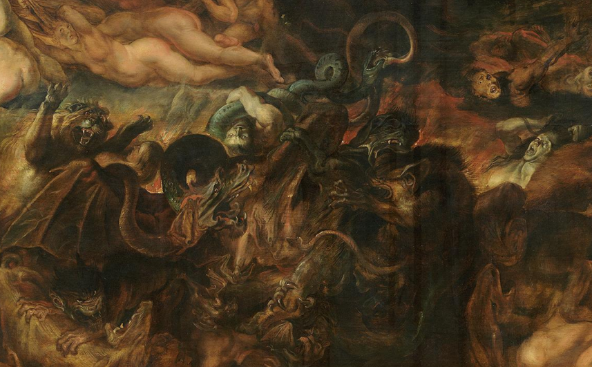
Références critiques principalement mobilisées
Jacques Truchet, La Prédication de Bossuet. Étude des thèmes, Paris, Champion, 1960, notamment sur Providence, souffrance et détachement ;
Politique de Bossuet, Paris, Armand Colin, 1966, p. 59-65 pour les événements d’Angleterre ;
Anne Régent, « L’ethos bossuétiste », Littératures classiques, 46, 2002, p. 55-82 ;
Anne Régent-Susini, Bossuet et la rhétorique de l’autorité, Paris, Champion, 2011 ;
Laurent Susini, « Ipsum audite : la parole de Dieu dans les œuvres oratoires de Bossuet », Revue Bossuet, 2013 ;
Christine Noille, « Le montage d’un sermon », Poétique, 179, 2016, p. 15-37 ;
Gérard Bucher, « Les Oraisons funèbres de Bossuet : scénographie du langage et de la mort à l’âge classique », Études françaises, 37/1, 2001, p. 23-32 ;
Pierre Lyraud, « Les liaisons heureuses. Rhétorique des citations bibliques dans les oraisons funèbres de Bossuet », Revue Bossuet, 17, 2026 ;
Yohann Deguin, « Horizons familiaux des oraisons funèbres », ibid. ;
Gérard Ferreyrolles, Béatrice Guion, Jean-Louis Quantin, avec Emmanuel Bury, Bossuet, notamment Bury, « Panégyriques et oraisons funèbres » ;
Pour Henriette-Marie
Michelle Anne White, Henrietta Maria and the English Civil Wars, 2006,
Erin Griffey (dir.), Henrietta Maria : Piety, Politics and Patronage, 2008
Erin Griffey-Caroline Hibbard, « Henrietta Maria’s inventory at Colombes », 2012.
Notes
-
« It was the last of the wars or religion », John Morrill, « The Religious Context of the English Civil War », Transactions of the Royal Historical Society, 34, 1984, p. 155-178. L’article, d’inspiration « révisionniste » c’est-à-dire contestant la lecture marxiste qui prévalait alors, a fait et fait encore largement débat.
↩ -
On se reportera sur ces représentations caricaturales et hostiles à Claire Gheeraert-Graffeuille, La Cuisine et le forum, op. cit., p. 366 sqq., « Le royaume tombé en quenouille ».
↩ -
C’est le chiffre retenu par Peter Gaunt : soit 4 à 4,5% de la population. Melanie Harrington donne des chiffres un peu inférieurs, mais qui restent élevés : 180 000 décès, et Charles Carlton donne très précisément 230 441 morts, en tenant compte des maladies, donc il s’agit de l’estimation haute. Charles Carlton, This Seat of Mars : War and the British Isles 1482-1746, Yale University Press, 2012.
↩ -
A celles et ceux qui n’auraient pas le temps de se plonger dans ses ouvrages, leur autrice vous conseillle une chanson : https://www.facebook.com/NationalCivilWarCentre/videos/1264811467779350/?rdid=FtovyW1xjbQa2bTb# .
↩ -
Un exemple parmi d’innombrables : « προσέχουσιν ἅπαντες οὐχ οἷς εἴπομέν ποθ’ ἡμεῖς δικαίοις ἢ νῦν ἂν εἴποιμεν, ἀλλ’ οἷς ποιοῦμεν », Démosthène, 4e Philippique, « Tous font attention non pas aux paroles de justice que nous avons pu dire ou que nous dirions aujourd’hui, mais à ce que nous faisons. »
↩ -
Je renvoie sur ce point à la première partie de la thèse d’Anne Régent-Susini, Bossuet et la rhétorique de l’autorité, p. 44 sqq.
↩ -
Cité par Anne-Régent Susini, Bossuet et la rhétorique de l’autorité , p. 44.
↩ -
Michelle Wgite, Henrietta Maria and the English Civil Wars, Routledge, 2006, lien .
↩ -
« Vous ne connaîtrez ni le jour, ni l’heure », Matthieu, 25-13.
↩ -
Fénelon, Lettre sur les occupations de l’Académie française, 1714
↩ -
Milton, proche de Cromwell, appellera Salomon « uxorious king », dans le Paradis perdu, songeant davantage à Charles qu’au roi d’Israël.
↩ -
Je vous renvoie au très bel article de Line Cottegnies, « Machiavel et l’Antéchrist. Quelques réflexions sur les représentations du mal pendant la guerre civile anglaise et le Commonwealth (1642-1660) », Le Mal et ses masques, ENS Editions, 1998, https://books.openedition.org/enseditions/7191. Dans le même volume, voir aussi Claire Gheeraert-Graffeuille, « Les agents du diable. Sorcellerie et dissidence pendant la Révolution anglaise (1640-1660) ».
↩ -
On rappellera aussi que l’historiographie actuelle permet de mesurer la part de stylisation introduite par Bossuet. Les travaux de Blair Worden et de Peter Gaunt restituent un Cromwell profondément et sincèrement religieux ; le Protectorat est traversé de tensions entre armée, Parlements, expérimentations constitutionnelles et projets confessionnels. La « tolérance » cromwellienne elle-même reste limitée et liée au projet d’une communauté des saints, les « godly », tandis que l’armée devient une institution politique déterminante dans les années 1649-1660. Voir Blair Worden, God’s Instruments : Political Conduct in the England of Oliver Cromwell, Oxford University Press, 2012.
↩ -
2 Rois 11 et 2 Chroniques 22. On a reconnu bien sûr le sujet de la pièce de Racine, Athalie, 1691.
↩ -
« Il y a des choses dont on doit jouir, d’autres dont on doit user […]. Si nous voulons jouir de celles dont nous ne devons qu’user, notre marche est retardée, et parfois même nous sommes détournés de notre route, retenus et ralentis par l’amour des choses inférieures. », De la doctrine chrétienne, Livre I, 3-4.
↩